МИНИСТЕРСТВО МОРСКОГО ФЛОТА
|
Утверждена |
Согласована |
ИНСТРУКЦИЯ
ПО ПРОЕКТИРОВАНИЮ
МОРСКИХ
ПРИЧАЛЬНЫХ СООРУЖЕНИЙ
ВСН 3-80
Минморфлот
МОСКВА ЦРИА «МОРФЛОТ»
1981
|
Разработана |
Государственным проектно-изыскательским и научно-исследовательским институтом морского транспорта (Союзморниипроект) Зам. главного инженера Т.И. ЧОДРИШВИЛИ Руководитель разработки - ответственный исполнитель И.М. ЗИМОВИЧ Исполнители В.В. АКИМОВ, А.А. СОЛОДОВНИКОВ\ |
|
Внесена |
Государственным проектно-изыскательским и научно-исследовательским институтом морского транспорта (Союзморниипроект) |
|
|
Зам. главного инженера Т.И. ЧОДРИШВИЛИ Начальник отдела проектирования гидротехнических сооружений Г.И. ПЕТРОВ |
|
Утверждена |
Министерством морского флота по согласованию с Госстроем СССР |
|
Введена в действие |
Министерством морского флота 1 июля 1980 г. |
Утратившие силу нормативные документы
«Указания по проектированию морских
причальных сооружений» 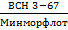
«Пособие по проектированию морских причальных сооружений» ч. 1, 2 и 3
«Руководство по расчету морских причальных сооружений в соответствии с требованиями главы СНиП II-51-74» (РТМ 31.3001-75).
|
Министерство |
Ведомственные строительные нормы |
ВСН 3-80 Минморфлот |
|
Инструкция по проектированию |
Взамен ВСН 3-67 ММФ |
1.1. Требования настоящей Инструкции должны соблюдаться при проектировании причальных сооружений морских портов и судоремонтных заводов.
Инструкция содержит общие требования по проектированию стационарных причальных сооружений и специальные требования по проектированию гравитационных сооружений уголкового профиля и из массивовой кладки, причалов типа «больверк» с анкеровкой на одном уровне и эстакад.
Примечание. Проектирование причальных сооружений, возводимых в сейсмических районах, в зонах распространения вечномерзлых, просадочных, набухающих, торфяных грунтов, на подрабатываемых и подверженных оползням и карстам территориях и в других особых условиях, должно производиться с учетом дополнительных требований соответствующих нормативных документов, а при отсутствии таковых - на основе специально проводимых исследований.
1.2. При проектировании причальных сооружений надлежит руководствоваться требованиями соответствующих глав СНиП и указаниями настоящей Инструкции.
1.3. При разработке проекта причального сооружения необходимо иметь исходные данные, устанавливаемые в соответствии с генеральным планом и технологической частью проекта, естественными условиями участка строительства, а также с условиями производства работ (согласно пп. 1.4-1.6 настоящей Инструкции).
Технологическая часть проекта определяет следующие исходные данные проекта причального сооружения:
длину причалов;
отметку дна у причала;
отметку кордона;
категорию эксплуатационных нагрузок;
типы расчетных судов, принимаемые в основу компоновки и определения судовых нагрузок на причалы;
специальные требования к причалу.
|
Внесена Союзморниипроектом |
Утверждена |
Срок введения |
1.5. В качестве исходных используются следующие данные о естественных условиях и застройке участка строительства:
а) топографические (план участка строительства с горизонталями и привязкой существующих зданий и сооружений);
б) гидрографические (план промеров глубин акватории с построением изобат, сведения о морских свалках грунта);
в) гидро- и метеорологические (режимные характеристики ветра, волнения и уровней моря, сведения о ледовом режиме, заносимости или размыве в месте расположения проектируемого сооружения, степень агрессивности среды, климатические данные);
г) биологические, характеризующие отсутствие или наличие древоточцев различных видов, степень интенсивности их деятельности, сохранность и гниение древесины на различных уровнях, наличие биологических объектов, подлежащих охране;
д) геологические и гидрогеологические (геологические профили, физико-механические характеристики грунтов основания и засыпки, сведения о грунтовых водах и их агрессивности);
е) данные о сейсмичности (с учетом микрорайонирования), а также о карстовых, оползневых и просадочных явлениях на участке строительства.
1.6. Данные об условиях производства работ должны включать следующие сведения:
а) производственные возможности строительной организации (производственные базы, их расположение и характеристика, краны и иное строительное оборудование);
б) размещение предприятий, изготовляющих сборные железобетонные элементы, их производственная мощность, степень загрузки, технологические возможности;
в) транспортные связи района строительства с базами, заводами-поставщиками, пунктами заготовки местных строительных материалов;
г) местные строительные материалы (номенклатура, количественная и качественная характеристики, условия разработки и транспортировки).
1.8. В качестве строительных материалов для изготовления конструкций причальных сооружений применяются бетон, железобетон, сталь, дерево и камень в соответствии с требованиями, установленными раз. 2 настоящей Инструкции.
Рекомендуется применение долговечных полимерных синтетических материалов, проверенных в натурных условиях, при соответствующем технико-экономическом обосновании.
1.9. В рабочих чертежах на строительство сооружений должны быть даны ссылки на действующие нормативные документы, которыми следует руководствоваться при производстве и приемке работ, в случае необходимости приведены дополнительные указания, учитывающие специфические особенности строительства конструкций, а для конструкций, по которым нормативные документы на производство и приемку работ еще не разработаны, даны основные требования к изготовлению элементов и монтажу конструкций, а также допуски отклонений от проекта в размерах и положении отдельных элементов сооружения.
а) многократного попеременного замораживания и оттаивания, а также увлажнения и высыхания, вызывающих интенсивное разрушение бетона в зоне переменного уровня воды;
б) химического действия морской воды и других агрессивных минерализованных или пресных вод, атмосферы, насыщенных влагой химических грузов и блуждающих токов, вызывающих коррозию бетона и стали;
в) истирания и механического повреждения конструкций в результате воздействий швартующихся судов, волн, движущихся наносов, льда и иных плавающих предметов;
г) разрушения лесоматериалов в результате гниения или действия древоточцев.
1.11. Долговечность конструкций при различных сочетаниях неблагоприятных воздействий, перечисленных в п. 1.10, обеспечивается путем:
а) выбора рационального конструктивного решения;
б) зонального распределения строительных материалов в составе конструкции (например, дерево в подводной зоне и железобетон в зоне переменного уровня воды и выше);
в) выбора строительных материалов применительно к специфике агрессивных воздействий, характерных для района строительства;
г) выбора материалов, обеспечивающих получение параметров бетона, соответствующих условиям его службы;
д) изготовления железобетонных элементов конструкций с применением специальных способов повышения качества бетона (вибропрессования, вибропроката, центрифугирования и т.д.), а также выдерживания бетона в благоприятных условиях твердения:
е) применения специальных мер защиты - облицовки, покрытий, пропитки, катодной или протекторной защиты металла.
2.1. Конструкцию сооружения следует выбирать исходя из технико-экономической целесообразности ее применения в конкретных условиях строительства на основе сопоставления вариантов.
2.2. Экономическую целесообразность сравниваемых вариантов следует определять на основе сопоставления стоимостей возведения сооружения, а в случаях, когда сроки строительства по вариантам резко различны, учитывать экономический эффект, получаемый в результате более раннего ввода в эксплуатацию проектируемого объекта.
2.3. При выборе варианта конструкции следует учитывать:
а) расход основных строительных материалов (металла, цемента, лесоматериалов) в соответствии с требованиями технических правил по экономному расходованию основных строительных материалов;
б) наличие местных строительных материалов;
в) трудоемкость производства работ;
г) степень сложности строительства;
д) наличие оборудования и механизмов, необходимых для строительства;
е) требования к долговечности сооружения;
ж) эксплуатационные показатели.
2.4. При наличии угрозы размыва дна перед причалом в проекте необходимо предусматривать укрепление дна или учитывать понижение его уровня в результате размывов
3.1. Конструкции причальных сооружений следует разделять на секции, предусматривая устройство между ними осадочных и температурных швов в соответствии с требованиями пп. 5.3, 6.7 и 7.5 настоящей Инструкции.
3.2. Связи между сборными элементами для обеспечения их совместной работы в пределах секции следует проектировать, руководствуясь указаниями пп 5.10, 5.24, 5.28, 6.5, 7.7-7.10 настоящей Инструкции.
3.3. Узлы соединения сборных элементов следует проектировать с учетом допускаемых нормами отклонений в размерах и положении устанавливаемых элементов.
Швартовные тумбы следует размещать по осям секций сооружения, нормальным к линии кордона, или симметрично этим осям.
В крайних секциях причальных сооружений следует, как правило, устанавливать дополнительные тумбы, располагаемые у торца причального сооружения.
Тумбовые массивы следует бетонировать на месте. Допускается закрепление тумб на сборных элементах верхнего строения.
Для заанкерованных шпунтовых и уголковых стенок следует проектировать тумбовые узлы с усиленной или дополнительной анкеровкой (см. п. 6.9 настоящей Инструкции).
Примечания: 1. Установку, крепление и конструкцию швартовных тумб следует осуществлять по типовому проекту.
2. Тыловые швартовные устройства, расположенные за пределами причального сооружения и предназначенные для швартовки судов с высоким бортом, могут иметь специальную конструкцию, не предусмотренную ГОСТ 17424-72.
3.5. Причальные сооружения должны быть оборудованы отбойными устройствами.
Вынос отбойных устройств относительно лицевой грани верхнего строения должен обеспечивать нормальную стоянку судна у причала при минимальном зазоре 20 см между подводной частью корпуса судна и выступающими частями сооружения или подпричального откоса. При этом следует учитывать возможность обжатия отбойных устройств и крена судна, допускаемого указаниями норм технологического проектирования морских портов.
3.6. Закладные детали для крепления отбойных устройств следует располагать заподлицо с лицевой гранью сооружения.
Примечания: 1. Приведенное требование не учитывается в тех случаях, когда грунтонепроницаемость сооружения обеспечивается призмой из каменной наброски с обратным фильтром.
2. В тех случаях, когда конструкция сооружения создает препятствие для движения грунтовых вод в сторону акватории, следует устраивать дренажи по всей длине причального фронта, сходящиеся к водопропускным отверстиям в стенках (см. прил. 1).
а) из щебня, гравия и песка - многослойные или однослойные из смесей с подбором фракций и толщины слоя на основе лабораторных исследований. При этом необходимо учитывать механический состав грунта засыпки, волновой режим акватории, наличие приливно-отливных колебаний, их амплитуду;
б) из нетканых синтетических материалов (фильтрующих полотнищ).
Примечания: 1. При наличии в основании постели крупнозернистых грунтов обратные фильтры можно не устраивать, за исключением случаев, когда из-за волновых воздействий возможен вымыв грунта из-под постели.
2. Обратные фильтры из нетканых материалов под каменными постелями применять не следует.
3. Обратные фильтры из камня, щебня или гравия допускается устраивать в соответствии с рекомендациями прил. 1 к настоящей Инструкции.
При наличии в составе конструкции причала анкерных тяг указанные требования к материалам, за исключением камня, распространяются на верхний слой обратной засыпки, начиная с отметки заложения тяг (см. также п. 3.8 настоящей Инструкции).
Ниже глубины заложения подземных коммуникаций или анкерных тяг засыпку пазух следует производить грунтами, отвечающими требованиям п. 4.21 настоящей Инструкции.
3.10. Замкнутые полости в конструкциях в зоне возможного льдообразования не допускается устраивать без специального обоснования в проекте. Исключение составляют сваи-оболочки в основаниях эстакад и в лицевых стенках больверков. Во всех случаях применения конструкций из стали, бетона или железобетона с замкнутыми полостями в зоне возможного льдообразования эти полости должны заполняться бетоном, водоотталкивающим или другим материалом, эффективность применения которого проверена опытом эксплуатации.
Примечания: 1. Требования настоящего пункта не распространяются на ячеистые конструкции из стального шпунта.
2. При заполнении полостей бетоном следует ограничивать процессы, вызывающие образование трещин в сваях-оболочках от температурных воздействий и деформаций бетона-заполнителя.
3. В обоснованных случаях следует предусматривать теплогидроизоляционную защиту бетона-заполнителя согласно указаниям .
3.11. Толщина железобетонных элементов конструкций сооружения должна определяться расчетом и для основных конструктивных элементов быть не менее величин, указанных в табл. 1.
Таблица 1
|
Минимальная толщина, см |
|
|
Железобетонные, предварительно напряженные элементы верхнего строения эстакад, лицевые панели уголковых стенок, сваи шпунтовые плоские и тавровые |
15 |
|
То же, без предварительного напряжения и напряженные в тяжелых условиях службы |
20 |
|
Сваи-оболочки диаметром 1 м и более из предварительно напряженного железобетона |
12 |
|
То же, без предварительного напряжения и напряженные в тяжелых условиях службы |
15 |
Примечание. Для рабочей стержневой арматуры, расположенной у поверхностей железобетонных элементов, соприкасающихся с грунтовой засыпкой, а также для рабочей стержневой арматуры центрифугированных железобетонных элементов наименьшая толщина защитного слоя может быть снижена до 40 мм.
3.13. Для повышения долговечности бетонных и железобетонных конструкций и их элементов, кроме указанных в пп. 3.11 и 3.12 конструктивных решений, следует применять:
а) преимущественно предварительно напряженные конструкции;
б) в особо тяжелых условиях эксплуатации - напряженно-армированные конструкции с обжатием бетона, не допускающим возникновения в нем растягивающих напряжений при воздействии постоянных и длительно действующих временных нагрузок;
в) в бетоне бетонных и железобетонных конструкций - ограничение сжимающих напряжений в соответствии с ;
г) конструктивные элементы с наименьшим отношением поверхности, подвергающейся агрессивным воздействиям, к объему;
д) стационарные или съемные защитные пояса или обоймы из материалов повышенной коррозиестойкости или устойчивых против истирания;
е) для эстакадных конструкций - защитные козырьки, для стенок - ледозащитные пояса с увеличенным сечением элементов.
3.14. Элементы сборных железобетонных конструкций следует укрупнять, исходя из условий технико-экономической целесообразности, в пределах, допускаемых условиями изготовления, транспортировки и монтажа.
При транспортировке элементов конструкций по железной дороге габаритом 1-Т МПС максимальная ширина элемента не должна превышать 3,25 м; в случае транспортировки по внутрипостроечным железнодорожным путям ширина элемента может быть увеличена до 4,0 - 4,5 м.
При транспортировке элементов автотранспортом максимальная ширина элемента не должна превышать 4 м.
Примечания: 1. В проекте следует рассматривать возможность перевозки сборных железобетонных элементов в вертикальном положении с использованием специальных кассет.
2. В случаях, когда это допускается условиями подъема и транспортировки, следует предусматривать укрупнение элементов, изготовляемых заводским способом, путем предварительной сборки и омоноличивания на припостроечных площадках до установки в сооружение.
3. Если это возможно и экономически целесообразно, следует выполнять перевозку сборных элементов морским транспортом.
3.15. Габаритные размеры и армирование элементов, назначенные из условий эксплуатации, должны, как правило, удовлетворять требованиям транспортировки и монтажа конструкции (см. п. 3.20 настоящей Инструкции).
Габаритные размеры сборных элементов следует назначать из условия сокращения их типоразмеров до оптимального количества, определяемого технико-экономическими расчетами и сопоставлениями, с учетом требований унификаций как самих элементов, так и оборудования для их изготовления.
Масса и габаритные размеры сборных элементов должны соответствовать технологии их изготовления.
3.16. В сборных железобетонных элементах в соответствии с конструктивно-компоновочной и монтажной схемами сооружения следует предусматривать установку закладных деталей или арматурных выпусков, обеспечивающих надежное крепление:
а) стационарного технологического оборудования, подкрановых рельсов и т.п.;
б) элементов между собой при монтаже и эксплуатации;
в) металлических анкерных тяг;
г) конструкций и швартовных устройств, стремянок;
д) конструкций перекрытия стыков, не связанных между собой элементов вертикальной стенки;
е) вибропогружателя;
ж) захватных устройств для подъема элементов при транспортировке и монтаже.
3.17. Закладные детали и их расположение в сборных элементах следует по возможности унифицировать, не допуская перерасхода стали.
3.18. Для образования в железобетонных элементах сквозных отверстий для пропуска болтов, рымов, анкерных тяг и т.п. необходимо предусматривать установку закладных деталей в виде трубок и коробок, остающихся в бетоне и облицовывающих поверхность бетона в отверстии.
3.19. Положение закладных деталей при бетонировании должно обеспечивать возможность качественного уплотнения прилегающего к этим деталям бетона.
3.20. Для подъема сборных элементов конструкций в них следует предусматривать захватные устройства в виде инвентарных монтажных вывинчивающихся петель в соответствии с указаниями технических правил по экономному расходованию основных строительных материалов или стационарных петель из арматурных стержней (см. п. 4.9 настоящей Инструкции), а также отверстий и закладных частей для ключей.
Схему расположения захватных устройств следует назначать с таким расчетом, чтобы усилия в сечениях элементов в процессе транспортировки и монтажа были, как правило, меньше, чем при эксплуатации.
3.22. Петлевые стыки рекомендуется выполнять из гладких круглых стальных стержней класса A-I с диаметром петель не менее 5d (d - диаметр стержня). В пределах ядра стыка поперек петлевых стержней следует укладывать не менее шести стержней. В петлевых стыках, работающих на изгиб, в пределах ядра на петле должен быть прямой участок длиной, равной диаметру закругления.
Допускается изготовлять петлевые стыки из арматуры периодического профиля с диаметром перегиба стержней не менее 8d.
3.23. Сварные соединения арматуры следует принимать в соответствии с требованиями ГОСТ 14098-68, ГОСТ 19292-73, ГОСТ 19293-73, а также с указаниями главы СНиП на бетонные и железобетонные конструкции.
В проектах необходимо отмечать, что технология сварки должна соответствовать требованиям СН 393-69, а качество сварных арматурных изделий и соединений - ГОСТ 10922-75.
3.24. При изготовлении предварительно напряженных свай-оболочек с применением арматуры класса А-IIIв звенья свай-оболочек следует армировать цельными стержнями с приваренными по концам контактной сваркой наконечниками большего диаметра. В проекте необходимо отмечать, что арматуру следует упрочнять вытяжкой до натяжения после приварки наконечников и что длина и диаметр наконечников, а также режим сварки при креплении в натянутом состоянии арматуры (наконечников) к обечайке свай-оболочек должны исключить перегрев стали, снимающий в теле основного стержня упрочнение вытяжкой.
3.25. Элементы, потерявшие на части длины предварительное напряжение в результате производственных операций (например, подрубки голов свай, свай-оболочек и т.п.) и поэтому не удовлетворяющие условиям трещиностойкости или предельной величине раскрытия трещин, следует в соответствующих зонах усиливать с учетом выполнения требований по раскрытию трещин в бетоне или предусматривать защитные мероприятия, обеспечивающие его коррозиестойкость.
3.26. Для предотвращения повреждения верхнего торца свай при вибропогружении или забивке следует предусматривать косвенное армирование поперечными сварными арматурными сетками, установленными с шагом не менее 5 см от торца элемента и друг от друга. Число сеток определяется расчетом и должно быть не менее пяти.
Поперечное армирование концевых участков железобетонных свай длиной 1 м следует выполнять в соответствии с требованиями СНиП на бетонные и железобетонные конструкции к элементам с косвенным армированием, работающим на внецентренное сжатие. В средней части свай шаг поперечной арматуры принимать из расчета по прочности или конструктивно, но не более 20 см.
3.27. Для защиты от коррозии металлических элементов конструкций следует предусматривать применение антикоррозионных лакокрасочных покрытий.
В случаях интенсивной коррозии в зоне переменного уровня воды стальной шпунт может быть защищен железобетонной надстройкой (см. п. 6.6 настоящей Инструкции), а стальные трубчатые сваи - железобетонными обоймами.
3.28. Основание подкрановых и железнодорожных путей, располагаемых на причальном сооружении, принимается в зависимости от конструкции последнего.
Подкрановые и железнодорожные рельсы при размещении на верхнем строении причальных сооружений эстакадного безбалластного типа следует крепить к верхнему строению ростверка.
Подкрановые пути, размещаемые на засыпке, следует, как правило, устраивать на свайном основании во всех случаях, когда это практически возможно, а железнодорожные - на шпальном основании.
Основания подкрановых путей на железобетонных балках, плитах и т.п. рекомендуется укладывать после стабилизации осадки грунта засыпки. На период стабилизации допускается устраивать временное шпальное основание.
3.29. Возвышение головки рельсов над поверхностью территории в соответствии с указаниями норм технологического проектирования морских портов следует принимать равным не более 3 см.
Для прохода реборд колес кранов или железнодорожных составов у рельсов должны быть предусмотрены канавки, размеры которых принимаются в зависимости от конструкций ходовой части кранов или железнодорожных составов, намечаемых для эксплуатации на данном причале.
Рельсы подкрановых путей следует укладывать в соответствии с требованиями Правил технической эксплуатации перегрузочных машин.
3.30. Прикордонная полоса территории должна иметь цементобетонное, асфальтобетонное или железобетонное покрытие. При устройстве покрытия на насыпи, как правило, следует до стабилизации осадки грунта засыпки применять временные типы покрытий или сборные железобетонные плиты, которые при соответствующем обосновании могут быть применены в качестве временных.
Примечание. Проектировать покрытия в прикардонной полосе следует аналогичными покрытиям портовых территорий в соответствии с требованиями норм технологического проектирования морских портов.
3.31. Причальные сооружения, на которых работают машины внутрипортового колесного транспорта, должны быть оборудованы вдоль кордона бортовыми (охранными) съемными или стационарными колесоотбойными брусьями. Последние необходимо выделять, оклеивая цветной пленкой или окрашивая.
3.32. Установка раздаточных точек инженерных сетей на расстоянии менее 3 м от швартовных тумб не допускается.
4.1. Для бетонных и железобетонных конструкций морских причальных сооружений следует применять тяжелый гидротехнический бетон согласно ГОСТ 4795-68.
Требования к бетону, которые должны быть приведены в проекте, в зависимости от конструкции сооружения и условий службы бетона назначаются в соответствии с указаниями и настоящей Инструкции и характеризуются марками по прочности, водонепроницаемости и морозостойкости.
Примечания: 1. Допускается также применение легких керамзитобетонов.
2. Для покрытий территорий причалов следует применять бетон в соответствии с требованиями норм технологического проектирования морских портов по ГОСТ 8424-72.
4.2. Марка бетона по прочности определяется расчетом, а также требованиями долговечности.
В зависимости от конструктивных особенностей и условий работы в сооружении для бетонных и железобетонных конструкций рекомендуются проектные марки бетона, приведенные в табл. 2.
Таблица 2
|
Конструкции или элементы |
Рекомендуемая марка бетона по прочности при сжатии, кгс/см2 |
|
|
1 |
Сваи и сваи-оболочки, сборные элементы верхнего строения, плиты уголковых стенок из предварительно напряженного железобетона |
300 - 600 |
|
2 |
То же, из обычного железобетона |
200 - 400 |
|
3 |
Бетонные и железобетонные элементы и конструкции, подверженные истиранию (дорожные покрытия, защитные пояса, оболочки, козырьки и т.п.) |
300 - 600 |
|
4 |
Массивы бетонные, бетонные и армированные элементы надводных строений (подпорные стенки, оголовки) |
150 - 300 |
|
5 |
Бетон для заполнения анкерных стаканов арматурных пучков, железобетонных анкеров, торцевых прокладок, распределительных поясов |
400 - 600 |
|
6 |
Бетон омоноличивания рабочих стыков и узлов |
Проектная марка на одну ступень выше бетона омоноличиваемых элементов, а для бетона марки 400 и более равна марке бетона омоноличиваемых элементов |
Примечания: 1. По требованиям расчета прочности и трещиностойкости, а также водонепроницаемости и морозостойкости по поз. 2 и 4 могут применяться марки бетона выше приведенных в табл. 2.
2. При армировании предварительно напряженных конструкций пучками из арматурной проволоки - гладкой и периодического профиля, диаметром 5 мм и более - проектная марка бетона должна быть не менее 400.
4.3. В типовых проектах причальных сооружений, конструкций, деталей и узлов должны быть даны указания о том, что марки бетонов по водонепроницаемости и морозостойкости, а также требования по обеспечению долговечности бетона в условиях агрессивного воздействия внешней среды устанавливаются при привязке проекта.
4.4. Материалы, применяемые для приготовления гидротехнического бетона (цементы, поверхностно-активные органические добавки, песок, щебень, гравий, вода для затворения бетона и промывки заполнителей), должны отвечать требованиям ГОСТ 4797-69, а также в зависимости от района строительства, агрессивности среды и зоны расположения конструкции - требованиям и главы СНиП по защите строительных конструкций от коррозии.
Примечания: 1. При применении напрягающего цемента он должен удовлетворять требованиям ТУ 21-20-18-74 «Технические условия на напрягающий цемент с малой энергией самонапряжения (НЦ-20)».
2. Для элементов, изготавливаемых с пропариванием, введение водоотталкивающих и пластифицирующих добавок производится при специально отработанном режиме пропаривания, изложенном в .
4.5. Арматура для железобетонных конструкций в причальных сооружениях должна удовлетворять требованиям главы СНиП на бетонные и железобетонные конструкции, СНиП по защите строительных конструкций от коррозии и настоящей Инструкции.
4.6. Для ненапрягаемой арматуры железобетонных конструкций:
следует преимущественно применять:
а) горячекатаную арматурную сталь класса A-III;
б) горячекатаную арматурную сталь класса A-II - в тех случаях, когда арматурная сталь класса A-III не может быть использована эффективно по условиям трещинообразования;
допускается также применять:
в) горячекатаную арматурную сталь класса A-I - в основном для поперечной арматуры линейных элементов, для конструктивной и монтажной арматуры;
г) обыкновенную арматурную проволоку классов B-I и Вр-1 диаметром 5 мм и более - в качестве поперечной арматуры в сварных и вязаных арматурных изделиях;
д) горячекатаную арматурную сталь классов A-IV и A-V - только для продольной рабочей арматуры вязаных каркасов и сеток обычных и предварительно напряженных конструкций.
Ненапрягаемую арматуру из горячекатаной стали классов A-I, A-II и A-III, как правило, следует применять в виде сварных каркасов и сеток.
4.7. В качестве напрягаемой арматуры предварительно напряженных элементов:
следует преимущественно применять:
а) горячекатаную арматурную сталь класса A-IV;
б) арматурные пучки из проволоки классов B-II и Вр-II диаметром не менее 5 мм;
допускается также применять:
в) горячекатаную арматурную сталь класса A-V;
г) арматурную сталь класса А-IIIв, упрочненную вытяжкой с контролем напряжений и удлинений, применение которой должно быть согласовано в установленном порядке.
4.8. Для закладных деталей и соединительных накладок применяется, как правило, прокатная углеродистая сталь обыкновенного качества; марка стали устанавливается в зависимости от характера нагрузок на закладную деталь и температурных воздействий согласно главе СНиП на бетонные и железобетонные конструкции.
4.9. Для монтажных (подъемных) петель элементов сборных железобетонных и бетонных конструкций следует применять только горячекатаную арматурную сталь класса A-II марки 10ГТ и класса A-I марок ВСт3сп2 и ВСт3пс2. В случае, если возможен монтаж конструкций при температуре минус 40°С и ниже, не допускается применять сталь марки ВСт3пс2.
4.10. Сталь, применяемая для металлических конструкций причальных сооружений, должна удовлетворять требованиям главы СНиП на стальные конструкции, соответствующих ГОСТов и настоящей Инструкции.
4.11. Для несущих стальных конструкций причальных сооружений следует применять прокатную сталь класса С38/23 марки ВСт3сп5, ВСтГпс5 и ВСт3псб по ГОСТ 380-71 и марки 16Д по ГОСТ 6713-75.
Примечание. В особо тяжелых условиях службы, в районах с температурой от минус 40 до минус 70 °С следует применять низколегированную сталь по ГОСТ 19281-73 с ударной вязкостью не менее 3 кгс×см/см2.
4.12. Для изготовления анкерных тяг и деталей их соединений следует применять сталь класса С38/23 марок ВСт3сп2 и ВСт3Гпс2 для сварных конструкций по ГОСТ 380-71, а также по ГОСТ 2590-71.
Примечания: 1. Допускается для изготовления анкерных тяг применение стали ВСт3пс2 при условии их транспортировки и монтажа при температуре не ниже минус 20 °С.
2. Допускается для изготовления анкерных тяг применение сталей других классов и марок с характеристиками на холодный загиб, относительное удлинение и свариваемость не ниже, чем для сталей, указанных в настоящем пункте.
4.13. Для металлических стенок больверков следует применять шпунт из углеродистой стали класса С38/23 марки ВСт3сп4 для сварных конструкций по ГОСТ 380-71 и низколегированной стали класса С46/33 марки 15ХСНД по ГОСТ 19281-73 и марки 16ХГ по ТУ 14-1-33-71 «Сталь горячекатаная фасонного профиля шпунтовой сваи "Ларсен IV" и "Ларсен V"».
Примечание. Допускается применение шпунтов, прокатанных из других видов сталей с обоснованными механическими характеристиками и химическим составом
4.14. Для верхних строений конструкций мостового типа следует применять углеродистую сталь марки 16Д и низколегированную - марки 15ХСНД согласно ГОСТ 6713-75.
Примечание. Допускается для верхних строений конструкций мостового типа применение проката из сталей других марок с механическими характеристиками и химическим составом, соответствующими маркам стали, указанным в настоящем пункте.
4.15. Для болтов крепления связных балок и швартовных тумб следует применять сталь Ст3сп3 согласно требованиям ГОСТ 1759-70.
4.16. Для конструктивных элементов, не подлежащих расчету, рекомендуется применять сталь класса С38/23 марки ВСт3кп2 по ГОСТ 380-71.
4.17. Отливки для стальных конструкций рекомендуется проектировать из углеродистой стали, удовлетворяющей требованиям ГОСТ 977-75, и серого чугуна, удовлетворяющего требованиям ГОСТ 1412-70.
4.18. Сварные соединения стальных конструкций следует выполнять из сварочных материалов в соответствии с указаниями главы СНиП на стальные конструкции.
4.20. Щебень и гравий для устройства обратных фильтров, укрепления дна перед стенкой и т.п. должны удовлетворять требованиям ГОСТ 8267-75, ГОСТ 8268-74 и ГОСТ 10260-74, а также требованиям специальных нормативных документов и условию неразмокаемости.
4.21. Для обратной засыпки пазух причальных стенок (см. также п. 3.9 настоящей Инструкции) следует применять скальный грунт, природный песчаный грунт, содержащий более 90 % (по массе) фракций крупнее 0,1 мм, в том числе не ниже 50 % фракций крупностью 0,25 мм и более.
Допускается применять другие песчаные грунты, включая пылеватые пески, если объем илистых и глинистых частиц с размером фракций менее 0,1 мм не превышает в них 5 %.
Примечания: 1. Не допускается применять для засыпки грунты, содержащие растворимые в воде сернокислые соли и органические частицы в количестве более 5 % массы сухой минеральной части грунта. Для использования в качестве обратной засыпки заиленных пылеватых песков следует отмывать мелкую фракцию с помощью средств гидромеханизации.
2. Возможность применения для засыпки глинистых грунтов должна быть обоснована опытом эксплуатации в местных условиях или специальными исследованиями.
4.22. Для изготовления деревянных элементов конструкций причальных сооружений (отбойных рам, свай, брусьев, кранцев, палов и др.) применяются пиломатериалы и круглый лес хвойных пород, преимущественно сосновых, отвечающие требованиям ГОСТ 9463-72, ГОСТ 8486-66 и СНиП на деревянные конструкции. Кроме указанных материалов, можно использовать также клееную древесину.
Для несущих конструкций и отбойных устройств следует применять лес первого и второго сортов, для нерасчетных и неответственных элементов - второго и третьего сортов.
4.23. В качестве термо- и гидроизоляционных материалов и материалов для защиты от коррозии конструкций рекомендуется применять:
а) для бетонных и железобетонных конструкций - защитные материалы в соответствии с ;
б) для металлических конструкций и элементов, подверженных агрессивному воздействию среды, - водоустойчивые антикоррозионные покрытия - битумные, наклеечные покрытия и мастики на бумажной и тканевой основе, а также лакокрасочные покрытия (см. прил. 1 к настоящей Инструкции); для металлических закладных частей железобетонных конструкций - защитные покрытия в соответствии с указаниями ;
в) для деревянных конструкций и элементов, подверженных гниению и разрушаемых древоточцами, - пропитку водным раствором аммиаката меди (по технологии ЦНИИМФа) или креозотирование;
г) для облицовочной деревоплиты - пропитку синтетической, фенолформальдегидной смолой согласно .
5.1. Требования, изложенные в настоящем разделе, распространяются на следующие конструкции гравитационных причальных сооружений:
уголковые стенки контрфорсного типа;
уголковые стенки с внешней анкеровкой, имеющие в вертикальной плоскости две опоры: верхнюю - в точке крепления анкера и нижнюю - на низком пороге фундаментной плиты;
уголковые стенки с внутренней анкеровкой;
стенки из массивовой кладки в поперечном сечении без вертикальных швов и с массивами верхнего курса, имеющими разгружающий консольный свес.
5.2. Причальные сооружения гравитационного типа, особенно из правильной кладки массивов, не следует применять при неблагоприятных геологических условиях, когда можно ожидать значительной и неравномерной осадки основания сооружения.
Длина секции определяется в зависимости от геологического строения основания, высоты стенки и толщины постели:
для скального основания при толщине выравнивающего слоя из каменной наброски до 1,5 м - не более 45 м;
для нескальных оснований при глубине у причала до 13 м - не более 30 м, при глубине 13 м и более - не более 40 м.
Примечания: 1. Увеличение длины секции допускается при специальном обосновании в проекте.
2. Разбивка стенки на секции должна производиться с учетом обязательного устройства швов в местах возможной резкой разницы в осадках отдельных частей сооружения (в местах изменения грунтовых условий, примыкания нового сооружения к старому, изменения высоты стенки).
5.4. Для причальных сооружений гравитационного типа, возводимых на нескальных грунтах, следует устраивать постель из каменной наброски. При этом на грунты основания следует укладывать обратный фильтр из щебня или гравия толщиной не менее 0,3 м, за исключением случая, когда основание сложено из крупнозернистых грунтов (см. примеч. 1 к п. 3.8 настоящей Инструкции). Если основание сооружения сложено из скальных грунтов, каменная постель не устраивается, а в основание стенки укладывается выравнивающий слой из каменной наброски толщиной не менее 0,5 м.
Рис. 1. Фрагмент поперечного разреза причальной стенки:
1
- проектное дно; 2 - берма шириной не менее 2 м; 3 -
берма шириной не менее 1 м;
4 - щебень; 5 - каменная наброска
Примечания: 1. Для уголковых стенок с внешней анкеровкой допускается устраивать постель из гравия или щебня при условии ее устойчивости на волновые воздействия.
2. При скальных основаниях допускается применение вместо каменной наброски выравнивающего слоя бетона в мешках толщиной не менее 0,25 м.
5.5. По верху постели, по обе стороны основания стенки, следует устраивать бермы (рис. 1), ширина которых должна быть с морской стороны не менее 2 м, со стороны берега - не менее 1 м.
Примечания: 1. Постели большей толщины допускаются при условии технико-экономического обоснования.
2. Для причальных сооружений уголкового типа допускается принимать минимальную толщину постели равной 0,75 м.
5.7. Для отсыпки постелей и разгрузочных призм следует использовать камень массой от 15 до 100 кг.
Требования к качеству материала каменной отсыпки устанавливаются в соответствии с п. 4.19 настоящей Инструкции.
Примечание. Если причальная стенка подвержена волновым воздействиям, массу камня для отсыпки постели следует определять с учетом этих воздействий.
5.8. Обратный фильтр каменных постелей и разгрузочных призм следует выполнять в соответствии с требованиями п. 3.8 настоящей Инструкции.
Обратный фильтр каменных постелей на глинистых грунтах основания должен отсыпаться из крупного щебня размером 7 - 10 см.
Требования к качеству материала обратных фильтров устанавливаются в соответствии с п. 4.20 настоящей Инструкции.
Примечание. В качестве расчетного строительного уровня воды принимается:
в неприливных морях - средний многолетний (за период не менее 10 лет) уровень,
в приливных морях - средний многолетний (за период не менее 10 лет) приливный уровень.
В пределах секций контрфорсные блоки и лицевые панели следует омоноличивать железобетонной надстройкой.
5.11. Ширину лицевых и фундаментных панелей уголковых стенок по направлению вдоль кордона рекомендуется делать наибольшей, доступной для изготовления на заводах и установки на место.
5.12. Уголковые контрфорсные конструкции допускается выполнять сборными из ненапряженных железобетонных элементов.
Все элементы, составляющие блок этой конструкции, объединяют через выпуски и закладные детали омоноличиванием.
5.13. Лицевую панель уголковых стенок с внешней и внутренней анкеровкой, как правило, следует изготовлять из предварительно напряженного железобетона.
5.14. Для обеспечения грунтонепроницаемости вертикальных швов уголковых стенок следует предусматривать грунтонепроницаемые завесы.
Конструкцию завес допускается выполнять по рабочим чертежам типовых проектов.
Следует также применять навеску по швам фильтрующих полотнищ из нетканых синтетических материалов.
5.15. В уголковых стенках с внешней и внутренней анкеровкой на пороге фундаментной плиты, как правило, устраиваются выступающие из бетона стальные закладные опоры, а против них, на лицевой панели, - стальные опоры заподлицо с бетонной поверхностью.
Высота порога и отметка расположения шарнирных опор должны обеспечивать надежное опирание при возможной раздельной осадке лицевой и фундаментной плит в результате деформации постели.
5.16. В фундаментных плитах уголковых стенок с внешней и внутренней анкеровкой для обеспечения устойчивости лицевых плит во время монтажа конструкции, до засыпки пазухи, следует устраивать местные поддерживающие упоры, предотвращающие опрокидывание вертикальной плиты в сторону берега.
5.17. Установка сборного блока или элемента гравитационной стенки причального сооружения должна быть произведена на весьма тщательно выровненную постель.
5.18. Лицевую панель уголковых стенок с внешней и внутренней анкеровкой следует крепить двумя тягами, расположенными на одном уровне.
5.19. Уровень крепления анкерных тяг к лицевой панели, как правило, должен быть выше строительного уровня воды.
5.20. В конструкции крепления концов тяг уголковых стенок с внутренней анкеровкой следует предусматривать возможность регулирования рабочей длины этих тяг после установки конструкции до ее засыпки для выравнивания верха лицевой стенки по линии кордона.
5.21. Анкерные тяги в уголковых стенках с внутренней анкеровкой следует выполнять из широкополосной стали, при этом ширина стальной полосы должна находиться в плоскости поперечного сечения сооружения.
Анкерные тяги в уголковых стенках с внешней анкеровкой следует выполнять из стали круглого сечения (см. п. 6.10 настоящей Инструкции).
5.22. Анкерные опоры для уголковых стенок с внешней анкеровкой следует выполнять в виде анкерных железобетонных плит. Допускается забивать анкерные стенки, обеспечивающие возможность осуществления тылового крепления насухо.
5.23. В конструкции уголковых стенок с внешней анкеровкой следует предусматривать под анкерные тяги подмосточные сваи с насадками (см. п. 6.12 настоящей Инструкции).
Монолитность секции в первом случае обеспечивается перевязкой швов и железобетонной надстройкой, во втором - устройством железобетонной надстройки.
Примечание. Под обыкновенными массивами понимаются бетонные монолиты, имеющие форму прямоугольного параллелепипеда, в том числе со скошенными гранями и срезанными ребрами.
5.25. Массу основных массивов рекомендуется принимать максимально возможной с учетом условий транспортировки и укладки.
Массивы меньшей массы следует применять для замыкания курсов при обеспечении правильной перевязки швов.
Для консольных массивов, устанавливаемых в зоне переменных уровней воды, марка бетона должна удовлетворять требованиям обеспечения прочности и морозостойкости и быть не менее указанных в настоящем пункте.
Отношение наибольшего размера массива в плане к его высоте должно быть:
в кладке по курсам с перевязкой швов - не более 3 для глубин у причала до 11,5 м и не более 2,5 для глубин у причала 13,0 м и более;
в столбовой кладке без перевязки швов - не более 4 для глубин у причала до 11,5 м и не более 3 для глубин у причала 13,0 м и более.
Отношение наименьшего размера массива в плане к его высоте должно быть: в кладке по курсам с перевязкой швов - не менее 1 и для массивов, замыкающих курсы, - не менее 0,75.
Примечание. Требования п. 5.27 не распространяются на массивы верхнего курса, если они используются в качестве разгрузочных консолей стенки. В этом случае возможное применение массивов относительно меньшей высоты компенсируется повышением марки бетона (см. п. 5.26 настоящей Инструкции).
Примечание. Перекрытие швов допускается уменьшать до 0,5 м, но количество таких перекрытий швов не должно превышать 10 % их общего числа или в продольном разрезе, или в плане каждого курса.
5.29. Ширина вертикальных швов в проектной разрезке в пределах секции между массивами правильной кладки должна приниматься:
а) в кладке с перевязкой швов - 2 см;
б) в столбовой кладке - 4 см.
Ширина вертикальных осадочных швов между секциями в проектной разрезке должна приниматься равной 5 см.
5.30. Для обеспечения грунтонепроницаемости через швы массивовой кладки, а также для уменьшения активного давления на сооружение необходимо устраивать за стенкой разгрузочную призму из камня или принимать другие меры, проверенные опытным путем.
5.31. Для набережной стенки из массивовой кладки следует выполнять огрузку постели с целью ее обжатия и образования заданного проектом уклона стенки (см. прил. 2 к настоящей Инструкции).
6.1. Лицевые стенки в причальных сооружениях типа «больверк» выполняются из металлического или железобетонного шпунта или из сплошного свайного ряда.
6.2. Лицевые стенки железобетонных больверков, независимо от конструкции последних, должны обеспечивать грунтонепроницаемость по всей высоте сооружения путем устройства уплотнений швов между сваями (см. п. 3.7 настоящей Инструкции). Необходимость заглубления уплотнений ниже дна определяется требованиями обеспечения грунтонепроницаемости.
6.3. Дренаж за лицевой стенкой больверков следует предусматривать в случае возможного образования подпора грунтовых вод, в частности при систематическом колебании уровня акватории.
Примечания: 1. Дренаж рекомендуется выполнять в соответствии с данными, представленными в прил. 1, и примечаниями к п. 3.7 настоящей Инструкции.
2. При заполнении пазух за стенкой камнем дренаж не устраивается, однако отверстия в лицевой стенке для выпуска грунтовых вод необходимо предусмотреть.
6.4. Увеличение несущей способности стенки набережной типа «больверк» может быть достигнуто устройством разгрузочных платформ с экранирующими рядами свай, передней грунтовой пригрузки, переднего экрана, разгрузочных призм или другими способами, позволяющими снизить давление грунта на лицевую стенку.
Для больверков из стального шпунта в тех случаях, когда это приемлемо по условиям расположения отбойных устройств и защиты металла от коррозии, разрешается устройство небольшого железобетонного или стального оголовка (шапочного бруса).
При строительстве причала в районе пониженных агрессивных воздействий, где обеспечивается длительная сохранность шпунта, отметку низа надстройки принимают из условия создания опорной плоскости для отбойных устройств и возможности производства работ по возведению надстройки насухо.
При строительстве причалов на морях с большой амплитудой приливно-отливных колебаний, где опускание низа надстройки под отсчетный уровень представляет большие затруднения, вопрос о принятии отметки низа надстройки решается с учетом накопленного опыта эксплуатации сооружений в местных или аналогичных условиях.
6.8. Анкерные тяги следует крепить к лицевой стенке выше строительного уровня воды (см. примечание к п. 5.9 настоящей Инструкции) для проведения монтажных работ насухо.
Отступление от этого правила допускается при условии специального обоснования в каждом конкретном случае.
Примечания: 1. Допускается закреплять анкерные тяги в тумбовом массиве выше уровня крепления рядовых тяг.
2. Допускается в местах тумбового массива вместо постановки дополнительных тумбовых тяг увеличивать их диаметр по сравнению с диаметром рядовых анкерных тяг.
Звенья между собой следует соединять одним из следующих способов:
а) контактной сваркой в заводских условиях;
б) ванношлаковой сваркой;
в) сваркой с накладками цилиндрической формы;
г) талрепами.
Нарезные концы звеньев (шпильки) под гаечное или талрепное крепление следует выполнять из круглой стали большего диаметра, чем диаметр основных звеньев и приваривать их к последним одним из указанных в настоящем пункте способов.
Определяя диаметр шпильки, следует исходить из условия, чтобы диаметр по внутренней резьбе шпильки был не менее диаметра основного ствола тяги.
Примечание. Кроме стальных тяг круглого сечения, допускается применять анкерные тяги другого профиля при соответствующем технико-экономическом обосновании.
6.11. В больверках с лицевой стенкой из железобетонных элементов кольцевого и таврового сечения в случаях, когда это возможно по условиям деформаций и напряжений в лицевой стенке, следует предусматривать предварительное натяжение анкеров (до засыпки грунта в пазуху сооружения) для выравнивания в них усилий и обеспечения надежной совместной работы всей системы («лицевая стенка - анкерная тяга - анкерная стенка»).
В процессе предварительного натяжения анкеров следует тщательно контролировать его величину, установленную расчетом (см. п. 16.19 настоящей Инструкции).
6.13. Разрезку распределительного пояса следует принимать в соответствии с разрезкой надстроек согласно п. 6.7 настоящей Инструкции, т.е. не более чем через 40 м. В пределах секции балки соединяются сварными равнопрочными швами или сваркой с накладками.
Допускается устанавливать балки распределительного пояса с открытыми стыковыми швами, принимая расчетные схемы балок в соответствии с их конкретной разрезкой (см. прил. 3 к настоящей Инструкции).
6.14. Анкерные опоры следует изготавливать в виде стенки из железобетонных свай, позволяющей выполнять крепление анкерных тяг насухо и предпочтительной по условиям предварительного натяжения тяг, или в виде анкерных железобетонных плит или плит из обрезков металлического шпунта.
Анкерные стенки из стального шпунта или анкерные козловые опоры, связанные железобетонным шапочным брусом, допускается применять при надлежащем обосновании.
7.1. Причальные сооружения эстакадного типа следует преимущественно выполнять из железобетона, при этом для опор в виде свай или свай-оболочек применять предварительно напряженный железобетон, а для верхнего строения - железобетон предварительно напряженный и без предварительного напряжения.
Конструктивные элементы тылового сопряжения следует выполнять из железобетона и бетона.
Примечание. Применение стальных элементов для несущих конструкций должно быть специально обосновано в проекте.
7.2. Ширина верхнего строения ростверка определяется с учетом:
а) размещения железнодорожных путей, кранового и другого оборудования;
б) конструкции крепления подпричального откоса и его устойчивости;
в) конструкции тылового сопряжения с берегом или существующим сооружением.
Примечание. Увеличение ширины верхнего строения для обеспечения устойчивости подпричального откоса допускается при неблагоприятных грунтовых условиях и требует обоснования целесообразности по сравнению с другими способами (замена грунта, уменьшение шага опор и т.д.).
а) опоры в поперечном направлении размещаются с учетом расположения эксплуатационного оборудования (подкрановых путей портальных кранов, железнодорожных путей и т.п.), наиболее выгодной передачи временных нагрузок на опоры, а также ширины сооружения, определяемой в соответствии с п. 7.2 настоящей Инструкции;
б) при назначении продольного шага опор (пролета) следует добиваться такого соотношения конструктивных решений по верхнему строению и опорам, при котором стоимость 1 пог. м сооружения минимальна. При этом должны быть обеспечены оптимальное использование несущей способности опор и устойчивость подпричального откоса. Высота несущих элементов верхнего строения должна удовлетворять требованиям прочности и трещиностойкости, а также гарантировать допускаемые величины прогибов, не превышающие 1/500 l в пределах пролета и 1/250 lк - в пределах консоли (l и lк - длина соответственно пролета и консоли). Возвышение низа пролетного строения над расчетным уровнем воды должно назначаться с учетом волновых воздействий на ростверк. Оно должно обеспечивать возможность осмотра и ремонта ростверка снизу и быть не менее 0,8 м над расчетным строительным уровнем воды.
Примечание. Кроме того, для ростверков с подкрановыми и железнодорожными путями величины допускаемых деформаций верхнего строения от эксплуатационных нагрузок устанавливаются при проектировании с таким расчетом, чтобы отклонения в относительном положении рельсов при эксплуатации (отклонения на укладку плюс деформации) не превосходили величин, указанных в правилах эксплуатации перегрузочных машин или в паспортах поставляемого оборудования;
в) расстояние между осями вертикальных опор, воспринимающих горизонтальные нагрузки, следует принимать равным не менее 6D (где D - большая сторона прямоугольного сечения сваи или наружный диаметр сваи-оболочки).
Расстояние между осями вертикальных и наклонных висячих свай в плоскости их нижних концов должно быть не менее 3D, a свай-стоек - не менее 2,5D.
Примечание. В отдельных случаях, при условии специального обоснования в проекте, допускается в поперечном направлении расстояние между опорами, работающими на горизонтальные нагрузки, принимать равным менее 6D, но не менее 3D.
7.4. При проектировании свайного основания целесообразность применения наклонных или козловых свай вместо вертикальных должна определяться в зависимости от следующих факторов:
а) величины горизонтальной нагрузки на сваю;
б) количества дополнительных свай, необходимых для восприятия горизонтальных нагрузок;
в) наличия сваебойного оборудования для погружения наклонных или козловых опор.
В зависимости от направления приложенной нагрузки козловые и наклонные опоры в сооружении могут быть расположены как в плоскости, параллельной линии кордона, так и в плоскости, перпендикулярной ей.
7.5. Расстояние между температурными швами железобетонных ростверков эстакад следует принимать в соответствии с расчетом работы опор на дополнительный изгиб, возникающий в результате температурных деформаций ростверка, а также с учетом указаний п. 3.4 настоящей Инструкции.
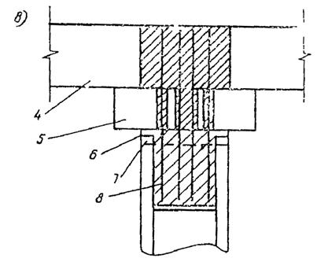
Рис. 2. Поперечный разрез стыковых соединений ростверков (зоны заполнения бетонов заштрихованы):
1 - длина анкеровки арматуры; 2 - дополнительная арматура; 3 - конструктивный наголовник; 4 - плита верхнего строения; 5 - ригель; 6 - обруч из металлической полосы; 7 - бетонная подготовка; 8 - бетон заполнения сваи-оболочки
7.6. В температурных швах причальных эстакад для передачи нагрузок от судов на соседние секции следует предусматривать зубья, шпонки или иные упорные устройства.
7.8. В ростверках из сборных железобетонных элементов для заделки арматурных выпусков голов свай должны быть устроены штрабы, заполняемые при сборке сооружения монолитным бетоном. Штрабы должны иметь наклон боковых поверхностей, обеспечивающий надежную передачу осевых нагрузок на опоры (рис. 2, а).
Примечание. Требования к наклону поверхностей штраб не распространяются на случаи, регламентированные п. 7.9 настоящей Инструкции.
7.9. При устройстве на сваях конструктивных наголовников или наличии сборных элементов ригеля, перекрывающих штрабы в ростверке (рис. 2, б и в), допускается:
а) заделка арматурных выпусков из свай в монолитном бетоне, укладываемом в полости конструктивных наголовников, с постановкой дополнительной арматуры, связывающей наголовник с ростверком (см. рис. 2, б);
б) стволы свай-оболочек не заделывать в ростверк из предварительно напряженного железобетона, ограничиваясь лишь обеспечением плотного примыкания торцов оболочек (см. рис. 2, в).
Плотное примыкание может быть обеспечено путем укладки в контакте торца оболочки с ростверком монолитного бетона или раствора, с установкой шашек, обеспечивающих проектные отметки ростверка.
Стык опор с ростверком в этом случае следует омоноличивать с помощью дополнительной арматуры, пропущенной через штрабы в ригеле и заделанной нижним концом в монолитный бетон, укладываемый в полость сваи-оболочки, а верхним концом - в бетон заполнения штрабы ростверка.
Стык между опорой и ростверком необходимо защитить от коррозионных воздействий.
7.10. Сборные элементы, из которых составляется верхнее строение железобетонных причальных эстакад, следует соединять связями, обеспечивающими единство работы конструкции под воздействием нагрузок.
При определении конструкций связей между сборными железобетонными элементами секций ростверков причальных эстакад следует руководствоваться следующими указаниями:
а) рабочие стыки сборных элементов ростверков, воспринимающие изгибающие моменты и поперечные силы, создаются путем сварки выпусков арматуры и укладки бетона омоноличивания или путем сварки закладных частей (см. п. 3.21 настоящей Инструкции);
б) стыки сборных элементов ростверков, воспринимающие поперечные силы, создаются путем устройства в примыкающих поверхностях элементов штраб с последующим заполнением их монолитным бетоном и установкой спиральной арматуры;
в) отдельные стыки между сборными элементами ростверка допускается выполнять без связей, «открытыми», в том случае, когда это приемлемо по условиям работы сооружения, а относительные смещения по линиям примыкания допустимы по условиям эксплуатации.
7.11. Ростверки причальных эстакад следует устраивать без грунтового (песчаного, гравийного и щебеночного) балласта. Для выравнивания поверхности, образуемой сборными элементами, ее покрывают слоем цементного или асфальтового бетона с учетом обеспечения необходимых условий прокладки рельсовых путей на эстакаде.
Примечание. Устройство балластного слоя на ростверке допускается при условии специального обоснования в проекте.
7.12. В ростверках необходимо предусматривать устройства, обеспечивающие вентиляцию подпричального пространства (см. прил. 4 к настоящей Инструкции), устройства для удаления атмосферных осадков, а на причалах химических грузов - устройства для предотвращения смыва в море вод с вредными включениями по требованиям охраны окружающей среды.
7.13. Для температурной вставки в ростверке с длиной пролета до 8 м включительно разрешается опорные части устраивать из металлических листов.
При длине пролета более 8 м на опорах должны применяться тангенциальные опорные части по типу опорных элементов пролетных строений мостов.
7.14. Сваи-оболочки следует применять цельными или составными из звеньев, соединенных между собой металлическим сварным стыком. Прочность стыка должна быть равна прочности основного ствола оболочки.
7.15. При наличии интенсивного истирающего воздействия наносов нижнюю часть свайных опор в прибойной зоне следует защищать съемными железобетонными чехлами.
а) обосновывать конструкцию волногасительной системы сопряжения с берегом и размеры ее элементов результатами лабораторных исследований, а при наличии соответствующих данных - и материалами эксплуатации в натуре. При этом следует руководствоваться материалами, представленными в прил. 4 к настоящей Инструкции;
б) назначать уклон подпричального откоса исходя из его устойчивости, а также устойчивости основания. При этом допускается выход нижней бровки откоса за линию отбойных устройств при соблюдении требований п. 3.5 настоящей Инструкции;
в) предусматривать берегоукрепление откоса путем отсыпки камня с креплением верхней зоны, подвергающейся интенсивному размыву, выкладкой камня нужного качества и достаточной массы с учетом волнового воздействия или покрытием каменной отсыпки щелевыми железобетонными плитами. Размеры элементов конструкции крепления верхней зоны откоса принимаются по результатам исследований, указанных в п. 7.16, а.
Примечание Компоновочную схему сооружения и конструкцию тылового сопряжения откоса с территорией причала следует выбирать таким образом, чтобы они по возможности практически не ухудшали волнового режима акватории.
7.17. Узлы соединения сборных железобетонных элементов конструкций эстакадных причальных сооружений следует проектировать с учетом допускаемых отклонений в размерах и положении монтируемых элементов.
Допускаемые отклонения от проектного положения в плане свай и свай-оболочек следует принимать по указаниям главы СНиП на правила производства и приемки работ сооружений гидротехнических транспортных, энергетических и мелиоративных систем.
8.1. Расчет морских причальных сооружений, а также их конструктивных элементов и оснований следует выполнять в соответствии с требованиями глав СНиП на гидротехнические сооружения морские и на строительные конструкции и основания по методу предельных состояний.
8.2. Расчетные нормативы, приведенные в настоящей Инструкции, распространяются на основные типы причальных сооружений I - IV классов капитальности (см. п. 1.7 настоящей Инструкции).
8.3. При проектировании морских причальных сооружений должны быть выполнены следующие расчеты.
По первой группе предельных состояний (по несущей способности) рассчитываются:
а) общая устойчивость сооружения в целом, а для причальных сооружений эстакадного типа и подпричального откоса по кругло-цилиндрическим и ломаным (фиксированным) поверхностям скольжения (сдвига), а также по методам, основанным на территории предельного равновесия, - в соответствии с главой СНиП на основания гидротехнических сооружений и указаниями настоящей Инструкции;
б) устойчивость по схеме плоского сдвига, по швам массивовой кладки, по постели и совместно с ней, а также на сдвиг надстройки, когда последняя не замоноличена с основной конструкцией стенки, и на опрокидывание (поворот) вокруг ребра вращения для причальных сооружений гравитационного типа - в соответствии с указаниями и требованиями норм настоящей Инструкции.
Примечание. В тех случаях, когда по основанию гравитационной стенки или по швам массивовой кладки обеспечено приложение равнодействующей нагрузок в пределах ядра сечения, расчет на опрокидывание вокруг ребра вращения не производится;
в) устойчивость при вращении вокруг точки крепления анкера для больверков, у которых не обеспечено защемление по низу лицевой стенки, - в соответствии с указаниями настоящей Инструкции;
г) устойчивость массива грунта, находящегося перед анкерными плитами или анкерной стенкой и обеспечивающего анкерное крепление конструкции типа «больверк» - в соответствии с указаниями и требованиями настоящей Инструкции;
д) несущая способность (прочность) конструктивных элементов причальных сооружений и их оснований - в соответствии с указаниями и требованиями настоящей Инструкции, а также с главами СНиП на бетонные и железобетонные конструкции гидротехнических сооружений, на бетонные и железобетонные конструкции, на стальные конструкции, на основания гидротехнических сооружений и на основания зданий и сооружений;
е) несущая способность свай и свай-оболочек на воздействие вертикальных и горизонтальных нагрузок - в соответствии с указаниями настоящей Инструкции и главой СНиП на свайные фундаменты;
ж) элементы конструкции на температурные и влажностные воздействия - в соответствии с главой СНиП на бетонные и железобетонные конструкции гидротехнических сооружений;
з) устойчивость формы и положения конструкции - в соответствии с главами СНиП на бетонные и железобетонные конструкции гидротехнических сооружений и на бетонные и железобетонные конструкции;
и) элементы конструкции на выносливость при многократно-повторных загружениях - в соответствии с главой СНиП на бетонные и железобетонные конструкции гидротехнических сооружений.
По второй группе предельных состояний (по деформациям и трещиностойкости) рассчитываются:
к) вертикальные осадки, горизонтальные перемещения и углы поворота - в соответствии с главой СНиП на основания гидротехнических сооружений; допускаемые прогибы пролетных строений железобетонных конструкций - в соответствии с главой СНиП на бетонные и железобетонные конструкции гидротехнических сооружений, а стальных конструкций - по СН 200-62 «Технические условия проектирования железнодорожных, автодорожных, городских мостов и труб».
л) железобетонные предварительно напряженные конструкции по образованию трещин - в соответствии с главами СНиП на бетонные и железобетонные конструкции гидротехнических сооружений и на бетонные и железобетонные конструкции;
м) железобетонные конструкции по раскрытию и закрытию нормальных и наклонных трещин - в соответствии с главой СНиП на бетонные и железобетонные конструкции гидротехнических сооружений и СНиП на бетонные и железобетонные конструкции.
Примечание. Перегрузки от эксплуатационных нагрузок для расчета конструкций по первой группе предельных состояний учитываются в соответствии с указаниями пп. 8.8, 8.13, 8.15 и 8.16 настоящей Инструкции.
8.5. При расчете морских причальных сооружений в соответствии с указаниями главы СНиП на основания гидротехнических сооружений следует принимать расчетные значения характеристик грунтов tg j и с для расчетов сооружений: по первой группе предельных состояний - tg jI и cI, по второй группе предельных состояний - tg jII и сII (j - угол внутреннего трения грунта; с - сцепление). Указанные характеристики принимаются по данным инженерно-геологических изысканий и исследований грунтов, выполненных в соответствии с требованиями главы СНиП на основания гидротехнических сооружений, а также ГОСТ 20522-75.
Примечание. В тех случаях, когда в районе проектируемого причального сооружения имеются аналогичные по конструкции и геологическим условиям причальные сооружения, рассчитанные по нормативным сдвиговым характеристикам грунтов основания и засыпки, с положительным и длительным опытом эксплуатации, а также выполнено большое и статистически обоснованное количество лабораторных испытаний проб, допускается принимать расчетные сдвиговые характеристики грунтов, равные нормативным, с коэффициентом безопасности по трению и сцеплению, равным единице.
8.6. При проектировании конструкций морских причальных сооружений, для которых еще не разработана методика расчета с учетом пластических деформаций, допускается выполнять расчет несущей способности (прочности) исходя из условий, при которых наибольшие напряжения в сечениях, определяемые по упругой стадии работы, не превышают соответствующих расчетных сопротивлений:
SI £ Ф, (1)
где SI - расчетное усилие в элементе (конструкции);
Ф - расчетная несущая способность элемента (конструкции).
8.8. Расчетное усилие SI, рассматриваемое по одному из показателей (изгибающий момент МI, поперечная сила QI, продольная сила NI) и принимаемое для расчета конструкций сооружений и их элементов по первой группе предельных состояний, определяется по формуле
SI = kн, nc, n, mД, S, (2)
где kн - коэффициент надежности, учитывающий степень ответственности и класс капитальности сооружения. Для сооружений: I класса - kн = 1,25; II класса - kн = 1,2; III класса - kн = 1,15; IV класса - kн = 1,1.
nc - коэффициент сочетания нагрузок, принимаемый равным: для основного сочетания нагрузок - 1,0; для особого сочетания - 0,9; для сочетания нагрузок в период строительства - 0,95;
п - коэффициент перегрузки, принимаемый для морских причальных сооружений равным 1,25;
Таблица 3
|
Дополнительный коэффициент условий работы mД при классе капитальности |
||||||||||||
|
I |
II |
III |
IV |
|||||||||
|
и сочетании нагрузок и силовых воздействий |
||||||||||||
|
основные |
особые |
строительные |
основные |
особые |
строительные |
основные |
особые |
строительные |
основные |
особые |
строительные |
|
|
Прокатная сталь |
||||||||||||
|
Растяжение, сжатие, изгиб, срез, смятие торцевой поверхности (при наличии пригонки), смятие местное при плотном касании |
0,85 |
0,75 |
0,80 |
0,85 |
0,80 |
0,85 |
0,90 |
0,80 |
0,85 |
0,85 |
0,75 |
0,80 |
|
То же отливок из углеродистой стали для марок: |
||||||||||||
|
15Л и 25Л |
0,80 |
0,70 |
0,75 |
0,85 |
0,75 |
0,75 |
0,85 |
0,75 |
0,80 |
- |
- |
- |
|
35Л и 45Л |
0,90 |
0,80 |
0,85 |
0,95 |
0,80 |
0,85 |
0,95 |
0,85 |
0,90 |
- |
- |
- |
|
Болтовые соединения |
||||||||||||
|
растяжение |
0,90 |
0,80 |
0,85 |
0,95 |
0,85 |
0,90 |
1,00 |
0,85 |
0,90 |
1,00 |
0,90 |
0,95 |
|
срез |
0,85 |
0,80 |
0,85 |
0,90 |
0,80 |
0,85 |
0,95 |
0,85 |
0,90 |
1,00 |
0,90 |
0,95 |
|
смятие |
0,75 |
0,65 |
0,70 |
0,80 |
0,70 |
0,75 |
0,80 |
0,75 |
0,75 |
0,85 |
0,75 |
0,80 |
Таблица 4
|
Дополнительный коэффициент условий работы mД при классе капитальности |
||||||||||||
|
I |
II |
III |
IV |
|||||||||
|
и сочетании нагрузок и силовых воздействий |
||||||||||||
|
основные |
особые |
строительные |
основные |
особые |
строительные |
основные |
особые |
строительные |
основные |
особые |
строительные |
|
|
Достижение бетоном расчетного сопротивления при сжатии |
0,90 |
0,85 |
0,85 |
0,90 |
0,85 |
0,85 |
0,90 |
0,85 |
0,85 |
0,90 |
0,85 |
0,85 |
|
Достижение бетоном расчетного сопротивления при растяжении (изгиб) |
0,95 |
0,85 |
0,90 |
0,95 |
0,85 |
0,90 |
0,95 |
0,85 |
0,90 |
0,95 |
0,85 |
0,90 |
Таблица 5
|
Дополнительный коэффициент условий работы mД при классе капитальности |
||||||||||||
|
I |
II |
III |
IV |
|||||||||
|
и сочетании нагрузок и силовых воздействий |
||||||||||||
|
основные |
особые |
строительные |
основные |
особые |
строительные |
основные |
особые |
строительные |
основные |
особые |
строительные |
|
|
Достижение бетоном предела прочности при сжатии и арматурой предела прочности при растяжении |
||||||||||||
|
а) в сжатых элементах для ненапрягаемой стержневой арматуры классов: |
||||||||||||
|
A-I, A-II, A-III |
1,00 |
1,00 |
1,00 |
1,00 |
1,00 |
1,00 |
1,00 |
1,00 |
1,00 |
1,00 |
1,00 |
1,00 |
|
A-IV |
0,90 |
0,90 |
0,90 |
0,90 |
0,90 |
0,90 |
0,90 |
0,90 |
0,90 |
0,90 |
0,90 |
0,90 |
|
A-V |
0,80 |
0,80 |
0,80 |
0,80 |
0,80 |
0,80 |
0,80 |
0,80 |
0,80 |
0,80 |
0,80 |
0,80 |
|
для напрягаемой стержневой арматуры классов: |
||||||||||||
|
А-IIIв, A-IV |
0,80 |
0,80 |
0,80 |
0,80 |
0,80 |
0,80 |
0,80 |
0,80 |
0,80 |
0,80 |
0,80 |
0,80 |
|
A-V |
0,75 |
0,75 |
0,75 |
0,75 |
0,75 |
0,75 |
0,75 |
0,75 |
0,75 |
0,75 |
0,75 |
0,75 |
|
для проволочной арматуры классов |
||||||||||||
|
B-II, Вр-II |
1,00 |
1,00 |
1,00 |
1,00 |
1,00 |
1,00 |
1,00 |
1,00 |
1,00 |
1,00 |
1,00 |
1,00 |
|
б) в растянутых элементах для ненапрягаемой стержневой арматуры классов: |
||||||||||||
|
A-I, A-II |
1,00 1,00 |
1,00 1,00 |
1,00 1,00 |
1,00 1,00 |
1,00 1,00 |
1,00 1,00 |
1,00 1,05 |
1,00 1,05 |
1,00 1,05 |
1,00 1,05 |
1,00 1,05 |
1,00 1,05 |
|
A-III |
1,00 1,05 |
1,00 1,05 |
1,00 1,05 |
1,00 1,05 |
1,00 1,05 |
1,00 1,05 |
1,00 1,05 |
1,00 1,05 |
1,00 1,05 |
1,00 1,05 |
1,00 1,05 |
1,00 1,05 |
|
A-IV, A-V |
0,95 1,00 |
0,95 1,00 |
0,95 1,00 |
0,95 1,00 |
0,95 1,00 |
0,95 1,00 |
0,95 1,00 |
0,95 1,00 |
0,95 1,00 |
0,95 1,00 |
0,95 1,00 |
0,95 1,00 |
|
для напрягаемой стержневой арматуры классов: |
||||||||||||
|
A-III |
1,00 |
1,00 |
1,00 |
1,00 |
1,00 |
1,00 |
1,00 |
1,00 |
1,00 |
1,00 |
1,00 |
1,00 |
|
A-IV, A-V |
0,85 |
0,85 |
0,85 |
0,85 |
0,85 |
0,85 |
0,85 |
0,85 |
0,85 |
0,85 |
0,85 |
0,85 |
|
для проволочной арматуры классов: |
||||||||||||
|
B-II, Вр-II |
1,10 |
1,10 |
1,10 |
1,10 |
1,10 |
1,10 |
1,10 |
1,10 |
1,10 |
1,10 |
1,10 |
1,10 |
|
в) в остальных элементах для ненапрягаемой стержневой арматуры классов: |
||||||||||||
|
A-I, A-II, A-III |
0,95 1,00 |
0,95 1,00 |
0,95 1,00 |
0,95 1,00 |
0,95 1,00 |
0,95 1,00 |
0,95 1,00 |
0,95 1,00 |
0,95 1,00 |
0,95 1,00 |
1,00 1,05 |
1,00 1,05 |
|
A-IV |
0,90 0,90 |
0,85 0,90 |
0,85 0,90 |
0,85 0,90 |
0,85 0,90 |
0,85 0,90 |
0,85 0,90 |
0,90 0,90 |
0,85 0,90 |
0,90 0,90 |
0,90 0,95 |
0,90 0,95 |
|
A-V |
1,00 1,00 |
1,00 1,00 |
1,00 1,00 |
1,00 1,00 |
1,00 1,00 |
0,95 1,00 |
1,00 1,00 |
1,00 1,05 |
1,00 1,00 |
1,00 1,05 |
1,05 1,10 |
1,05 1,05 |
|
А-IIIв |
1,00 1,00 |
1,00 1,00 |
1,00 1,00 |
1,00 1,00 |
1,00 1,00 |
0,95 1,00 |
1,00 1,00 |
1,00 1,05 |
1,00 1,00 |
1,00 1,05 |
1,05 1,10 |
1,05 1,05 |
|
для напрягаемой стержневой арматуры классов: |
||||||||||||
|
A-IIIв |
0,95 |
0,95 |
0,95 |
0,90 |
0,90 |
0,90 |
0,90 |
0,90 |
0,90 |
0,95 |
0,95 |
0,95 |
|
A-IV, A-V |
0,80 |
0,80 |
0,80 |
0,80 |
0,80 |
0,80 |
0,80 |
0,80 |
0,80 |
0,80 |
0,85 |
0,85 |
|
для проволочной арматуры классов: |
||||||||||||
|
B-II, Вр-II |
0,95 |
0,95 |
0,95 |
0,90 |
0,90 |
0,90 |
0,90 |
0,95 |
0,90 |
0,95 |
1,00 |
0,95 |
|
Достижение бетоном предела прочности при растяжении на действие поперечной силы |
- |
|||||||||||
|
а) соблюдение условия на действие поперечной силы |
1,00 |
1,00 |
1,00 |
1,00 |
1,00 |
1,00 |
1,00 |
1,00 |
1,00 |
1,00 |
0,95 |
0,95 |
|
б) соблюдение условия по конструктивному армированию |
1,00 |
1,00 |
1,00 |
1,00 |
1,00 |
1,00 |
1,00 |
1,00 |
1,00 |
1,00 |
1,00 |
1,00 |
|
в) расчет элементов с поперечной арматурой |
1,00 |
1,00 |
1,00 |
1,00 |
1,00 |
1,00 |
1,00 |
1,00 |
1,00 |
1,00 |
1,00 |
1,00 |
Примечание. В числителе даны значения при та2, = l,10, в знаменателе - при та2 = 1,15 (та2 - коэффициент условий работы арматуры, принимаемый по указаниям п. 2.18 и табл. 6 СНиП II-56-77 в зависимости от числа стержней рабочей арматуры в поперечном сечении элемента).
mД - дополнительный коэффициент условий работы, учитывающий особенности действительной работы элемента конструкции и некоторые условные предпосылки его расчетной схемы, принимаемой по табл. 3, 4 и 5 настоящей Инструкции;
S - усилие (М, Q, N), полученное из расчета конструкции, в котором значения эксплуатационных нагрузок и характеристик грунтов приняты в соответствии с требованиями пп. 8.4 и 8.5 настоящей Инструкции.
При этом расчеты сечений элементов следует выполнять по формулам СНиП на стальные конструкции с применением расчетных усилий, определенных по формуле (2) настоящей Инструкции.
8.10. Бетонные и железобетонные конструкции и элементы причальных сооружений следует рассчитывать в соответствии с требованиями СНиП на бетонные и железобетонные конструкции гидротехнических сооружений и СНиП на бетонные и железобетонные конструкции согласно данным табл. 6.
Таблица 6
|
Бетонные и железобетонные элементы конструкций сооружений и форма сечения |
Напряженное состояние элементов конструкции |
Нормативный документ, по которому выполняется расчет |
Характер выполняемых расчетов |
|
1. Все элементы конструкций при отсутствии предварительного напряжения за исключением указанных в поз. 2 |
Изгиб, внецентренное сжатие и растяжение, центральное растяжение |
СНиП на бетонные и железобетонные конструкции гидротехнических сооружений |
Расчеты прочности, ширины раскрытия нормальных трещин, деформаций, температурно-влажностных воздействий, на выносливость |
|
2. Элементы предварительно напряженных конструкций, а также тавровые, ребристые и кольцевые сечения как предварительно напряженные, так и без предварительного напряжения |
Изгиб, внецентренное сжатие и растяжение, центральное растяжение, кручение с изгибом |
СНиП на бетонные и железобетонные конструкции с учетом коэффициентов, принятых в СНиП на бетонные и железобетонные конструкции гидротехнических сооружений |
Расчеты прочности, по образованию трещин, по закрытию (зажатию) нормальных и наклонных трещин, на продавливание, на отрыв, закладных деталей коротких консолей |
Расчеты сечений элементов бетонных и железобетонных конструкций следует выполнять по формулам СНиП на бетонные и железобетонные конструкции и СНиП на бетонные и железобетонные конструкции гидротехнических сооружений с учетом предусмотренных ими коэффициентов условий работы и с применением расчетных усилий, определяемых по формуле (2) настоящей Инструкции.
8.11. Расчеты бетонных и железобетонных элементов конструкций морских причальных сооружений по второй группе предельных состояний (по деформациям, образованию, раскрытию или закрытию нормальных и наклонных трещин) следует выполнять по СНиП на бетонные и железобетонные конструкции гидротехнических сооружений на усилия, полученные статическими расчетами, выполненными с учетом требований пп. 8.4 и 8.5 настоящей Инструкции.
ЕсдвI £ РудI, (3)
где ЕсдвI - расчетное значение суммы сдвигающих конструкцию (элемент) сил или моментов;
РудI - расчетное значение суммы удерживающих конструкцию (элемент) сил или моментов.
8.13. Расчетные значения сдвигающих сил (моментов) ЕсдвI определяются по формуле (см. также п. 8.12 настоящей Инструкции)
ЕсдвI = nс n mд Есдв, (4)
где nс и п - то же, что в п. 8.8 настоящей Инструкции;
mд - дополнительный коэффициент условий работы, принимаемый по табл. 7 настоящей Инструкции;
Есдв - сдвигающие силы или моменты, при определении которых в расчет вводятся значения нагрузок и характеристик грунтов с учетом требований пп. 8.4 и 8.5 настоящей Инструкции.
8.14. Удерживающие силы (моменты) РудI определяются по формуле (см. также п. 8.12 настоящей Инструкции)
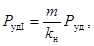
где т - коэффициент условий работы, принимаемый по указаниям главы СНиП на основания гидротехнических сооружений для портовых сооружений равным 1,15;
kн - то же, что в п. 8.8 настоящей Инструкции;
Руд - удерживающие силы или моменты, определяемые с применением в расчетах значений нагрузок и характеристик грунтов, указанных в пп. 8.4 и 8.5 настоящей Инструкции.
Таблица 7
|
Причина потери устойчивости сооружения или основания |
Дополнительный коэффициент условий работы mД при классе капитальности |
||||||||||||
|
I |
II |
III |
IV |
||||||||||
|
и сочетании нагрузок и силовых воздействий |
|||||||||||||
|
основные |
особые |
строительные |
основные |
особые |
строительные |
основные |
особые |
строительные |
основные |
особые |
строительные |
||
|
1 |
Потеря устойчивости сооружений при скольжении по плоскости (плоский сдвиг) и оснований причальных сооружений на глубинный сдвиг по ломаным (фиксированным) поверхностям скольжения в условиях плоской задачи |
0,95 |
0,90 |
0,95 |
0,95 |
0,95 |
0,95 |
0,95 |
0,95 |
0,95 |
0,95 |
1,00 |
0,95 |
|
2 |
Потеря устойчивости оснований причальных сооружений и подпричальных откосов (на ограниченном участке между опорами) на глубинный сдвиг по круглоцилиндрическим поверхностям скольжения в условиях плоской задачи |
0,75 |
0,80 |
0,75 |
0,75 |
0,75 |
0,75 |
0,75 |
0,80 |
0,75 |
0,75 |
- |
- |
|
3 |
Потеря устойчивости оснований причальных сооружений и подпричальных откосов (на ограниченном участке между опорами) на глубинный сдвиг по круглоцилиндрическим поверхностям скольжения в условиях пространственной задачи, а также с учетом влияния сцепления грунта и перерезывания свай в условиях плоской задачи |
0,75 |
0,80 |
0,80 |
0,75 |
0,80 |
0,80 |
0,80 |
0,85 |
0,80 |
0,80 |
- |
- |
|
4 |
Потеря устойчивости сооружения от опрокидывания вокруг ребра вращения |
1,25 |
1,25 |
1,25 |
1,25 |
1,20 |
1,20 |
1,20 |
1,25 |
1,20 |
1,20 |
- |
- |
|
5 |
Потеря устойчивости неполностью защемленной лицевой стенки больверков при повороте вокруг точки закрепления анкера |
1,10 |
1,10 |
1,10 |
1,10 |
1,10 |
1,10 |
1,10 |
1,05 |
1,10 |
1,10 |
1,10 |
1,10 |
|
6 |
Потеря устойчивости массива грунта, обеспечивающего анкерное крепление конструкций типа «больверк» (глубинный сдвиг) |
1,20 |
1,20 |
1,20 |
1,20 |
1,20 |
1,20 |
1,20 |
1,20 |
1,20 |
1,20 |
1,20 |
1,20 |
|
7 |
Потеря устойчивости анкерной стенки заанкерованных больверков |
1,60 |
1,50 |
1,55 |
1,55 |
1,45 |
1,50 |
1.50 |
1,40 |
1,45 |
1,45 |
1,35 |
1,40 |
|
8 |
Потеря устойчивости анкерных плит |
1,55 |
1,55 |
1,55 |
1,55 |
1,55 |
1,55 |
1,55 |
1,55 |
1,55 |
1,55 |
1,55 |
1,55 |
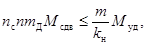
где пс, п, kн - то же, что в п. 8.8 настоящей Инструкции;
тд - дополнительный коэффициент условий работы, принимаемый по табл. 7, поз. 2, настоящей Инструкции;
m - то же, что в п. 8.14 настоящей Инструкции;
Мсдв и Муд - соответственно суммы моментов сдвигающих и удерживающих сил относительно критического центра окружности скольжения, определяемые в соответствии с требованиями пп. 8.13 и 8.14 настоящей Инструкции.
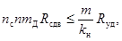
где пс, п, kн - то же, что в п. 8.8 настоящей Инструкции;
тд - дополнительный коэффициент условий работы, принимаемый по табл. 7, поз. 1, настоящей Инструкции;
m - то же, что в п. 8.14 настоящей Инструкции;
Rсдв и Rуд - суммы горизонтальных проекций реакций основания, представляющих соответственно сдвигающие и удерживающие силы, определяемые в соответствии с требованиями пп. 8.13 и 8.14 настоящей Инструкции.
8.17. Для распорных конструкций сосредоточенную крановую нагрузку допускается заменять эквивалентной равномерно распределенной.
При этом рекомендуется учитывать нагрузку только от прикордонной опоры крана, принимая давление от тыловой опоры равным равномерно распределенному от складирования грузов в этой зоне.
Для прикордонного подкранового рельса эквивалентную равномерно распределенную нагрузку допускается определять по формуле
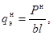
где Рн -
максимальная сосредоточенная нагрузка от сближенных или одиночных кранов, возможная
по технологическим условиям их работы ( 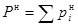
b - ширина подкрановой плиты или длина шпалы;
l - длина полосы распределения нагрузки вдоль линии кордона причала, определяемая в соответствии с рис. 3.
Рис. 3. Схемы (слева приведена схема поперечного разреза, справа - продольного) определения эквивалентной нагрузки:
для одиночной опоры крана l =2h tgj + l1 + l,0 при l0 ³ 2h tgj + 1,0;
для сближенных опор кранов l =2h tgj + l1 + l0 + l2 + l,0 при l0 < 2h tgj + 1,0;
Рис. 4. Эпюры фильтрационного давления sф на сооружение:
а - типа «больверк»; б - гравитационного типа
Расчетная эпюра волнового давления на сооружение от впадины волны определяется в соответствии с указаниями главы СНиП на нагрузки и воздействия на гидротехнические сооружения (волновые, ледовые и от судов). При этом, учитывая скорость колебания уровня за сооружением, допускается в расчет вводить эпюру волнового давления (от интерферированной, скользящей, косоподходящей волны) с ординатами, вдвое меньшими исходных.
8.19. Эпюра фильтрационного давления на лицевую стенку при понижении уровня воды перед сооружением принимается по рис. 4.
Максимальная ордината на отметке нового уровня воды перед стенкой
sф = gн Dh, (9)
где gн - удельная масса воды;
Dh - расчетная разность уровней за стенкой и перед стенкой.
Нулевая ордината фильтрационного давления внизу принимается для шпунтовых стенок на уровне подошвы стенки, для сплошного свайного ряда - на уровне подошвы уплотняющих (омоноличивающих) швы устройств.
Примечание. При проектировании указанных конструкций следует предусматривать дренажные устройства (см. п. 3.7 настоящей Инструкции), исключающие образование подпора. В этом случае фильтрационное давление не учитывается, а при значительном и интенсивном понижении уровня воды (ливных колебаниях) в акватории, особенно когда мала проницаемость основания, в расчет вводится объемная масса грунта в зоне колебания уровня в соответствии с п. 8.21 настоящей Инструкции.
Горизонтальную составляющую активного давления допускается также определять по классической теории для прямолинейных поверхностей скольжения призмы обрушения.
Ординаты эпюры горизонтальной составляющей активного давления в указанных методах определяются по формуле
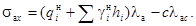
Ординаты эпюры вертикальной составляющей активного давления определяются по формуле
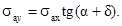
В формулах (10) и (11):
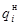
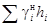
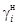
hi - высота i-го слоя грунта с неизменными физико-механическими характеристиками;
с - сцепление грунта (см. п. 8.5 настоящей Инструкции), расположенного в сечении, для которого определяется ордината активного давления;
lа и lас - коэффициенты горизонтальной составляющей активного давления грунта и от сил сцепления, определяемые в соответствии с указаниями п. 8.22 настоящей Инструкции по характеристикам грунта (см. п. 8.5 настоящей Инструкции), расположенного в сечении, для которого определяется ордината активного давления;
a - угол наклона расчетной плоскости восприятия распорного давления к вертикали;
d - угол трения грунта о плоскость восприятия распорного давления.
Примечания: 1. В случае, когда значение сlас больше sаx последняя на этом участке принимается равной нулю.
2. Допускается для вертикальных стенок значения sаx и sау определять по классической теории, а для стенок с наклонными тыловыми гранями - по теории предельного равновесия (см. прил. 5 к настоящей Инструкции).
8.21. Объемная масса грунта gн в зависимости от зоны его расположения и влажности принимается:
а) выше расчетного уровня воды для состояния естественной влажности - по данным инженерно-геологических изысканий;
б) под водой в состоянии гидростатического взвешивания - по формуле
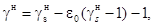
где
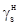
e0 - объем пустот в 1 см3 грунта.
Примечание. При наличии обоснованных данных допускается вводить частичное взвешивание для глинистых грунтов ограниченной влажности если в них нет фильтрующих прослоек и линз,
в) при переменных уровнях воды (ливных колебаниях) для несвязных грунтов:
выше верхней отметки горизонта воды при средней амплитуде колебаний уровня - равной объемной массе по подпункту «а»;
в пределах между верхней и нижней отметками горизонта воды при средней амплитуде колебаний, как для грунта, у которого все поры заполнены водой, - по формуле
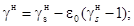
ниже нижней отметки горизонта воды при средней амплитуде колебаний уровня - равной объемной массе по подпункту «б».
Примечание. Для связных грунтов граница грунта с порами, полностью заполненными водой, принимается по данным гидрогеологических изысканий.
8.22. Коэффициенты горизонтальной составляющей активного давления при расчете по теории предельного равновесия для вертикальных стенок и горизонтальной поверхности грунта следует определять по табл. 1 прил. 6 к настоящей Инструкции.
При расчете по классической теории коэффициент горизонтальной составляющей активного давления грунта следует определять по формуле
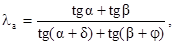
где a и d - то же, что в п. 8.20 настоящей Инструкции;
b - угол обрушения (угол между вертикалью и плоскостью обрушения), определяемый по указаниям п. 8.23;
j - угол внутреннего трения грунта (см. п. 8.5 настоящей Инструкции).
В частном случае, при отсутствии нагрузки на причале или равномерном ее распределении по всей территории причала для условной расчетной тыловой грани стенки, отклоненной от вертикали на угол a = b = 45° - 0,5 j, и трении грунта по этой грани при угле d = j или для случая вертикальной тыловой грани стенки и отсутствия трения по ней, т.е. при d = 0 и a = 0, коэффициент горизонтальной составляющей активного давления определяется по формуле
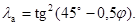
Коэффициент горизонтальной составляющей сопротивления сдвигу призмы обрушения под действием сил сцепления в грунте находят по формуле
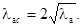
8.23. Угол обрушения b при расчетах по классической теории определяется по формуле
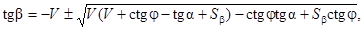
где V = tg(a + d + j);
j - то же, что в п. 8.22 настоящей Инструкции;
a и d - то же, что в п. 8.20 настоящей Инструкции;
Sb - коэффициент, учитывающий расположение временной нагрузки на призме обрушения и определяемый по формуле
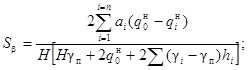
ai и qi - соответственно ширина полосы приложения (a1, a2, a3, ..., an) и интенсивность ( 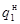 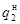 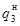 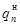 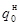
- интенсивность нагрузки в точке выклинивания на поверхности засыпки плоскости обрушения;
Н - полная высота призмы обрушения;
gп - объемная масса подстилающего слоя грунта в призме обрушения.
При определении в грунте засыпки угла наклона плоскости восприятия распора a (к вертикали) и соответствующего ему угла наклона плоскости обрушения b исходят из условия получения максимального распорного давления призмы обрушения на стенку.
Расчеты следует производить по формуле (17) в табличной форме при d = j.
Рис. 5. Схема расположения временной нагрузки для определения коэффициента Sb
Задаваясь значениями угла a, находят соответствующие им значения величины tg b. За расчетные принимают наименьшее значение величины tg b, отвечающее максимальному распорному давлению на стенку, и соответствующее ему значение угла a.
В частном случае, отмеченном в п. 8.22 настоящей Инструкции, угол обрушения определяется по формуле
b = 45° - 0,5 j. (19)
8.24. При наличии разгрузочной каменной призмы эпюра активного давления, построенная по указаниям пп. 8.20-8.23 в предположении бесконечного простирания слоев грунта, в том числе и камня, дополняется эпюрой от пригрузки грунта, расположенного в призме обрушения на откосе каменной отсыпки.
Ординаты Dsi дополнительной эпюры от пригрузки грунта (рис. 6) в общем виде следует определять:
в пределах каменной призмы на высоте DH - по формуле
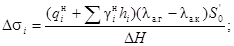
ниже каменной призмы на высоте Dt - по формуле
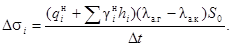
В формулах (20) и (21):
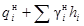
lа.г - коэффициент активного давления грунта, расположенного на откосе каменной призмы;
Рис. 6. Эпюра активного давления от пригрузки грунта, расположенного на откосе каменной постели. Основные формулы подсчета ординат эпюры:
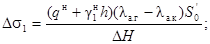
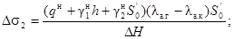
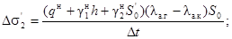
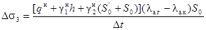
lа.к - коэффициент активного давления каменной отсыпки;
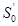
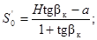
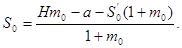
Остальные обозначения указаны на рис. 6.
Примечание. Допускается передачу давления на расчетную плоскость в призме обрушения отсыпки камня принимать под углом bк = 26° (см. рис. 6).
В пределах каждого слоя однородного грунта закон изменения пассивного давления по глубине принимается линейным.
Ординаты эпюры горизонтальной составляющей пассивного давления на вертикальную стенку при горизонтальной поверхности грунта определяются по формулам:
в прямом отпоре -
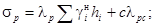
в обратном отпоре -
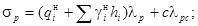
В формулах (24) и (25):
, , с - то же, что в п. 8.20 настоящей Инструкции, только для ординат пассивного давления;
lp - коэффициент горизонтальной составляющей пассивного давления грунта, принимаемый по табл. 2 прил. 6 к настоящей Инструкции в зависимости от угла внутреннего трения грунта (см. п. 8.5 настоящей Инструкции), расположенного в сечении, для которого определяется ордината эпюры пассивного давления, и угла трения призмы отпора о стенку;
lpc - коэффициент пассивного давления от сил сцепления, определяемый по табл. 2 прил. 6 к настоящей Инструкции, а также по формуле
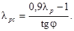
Примечания: 1. Допускается пассивное давление грунта определять по классической теории, исходящей из прямолинейных поверхностей скольжения в призме отпора. В этом случае ординаты пассивного давления определяются по формулам (24) и (25), в которых значения lp принимаются по табл. 3 прил. 6 к настоящей Инструкции, а lpc - по формуле
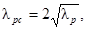
а также по табл. 3 прил. 6 к настоящей Инструкции.
2. Для поверхностного слоя, где возможно нарушение структуры связного грунта, принимается с = 0; полное сцепление принимается на глубине 1 м. Изменение сцепления от с = 0 до полного принимается линейным.
8.26. В случае наклона поверхности грунта перед стенкой под углом q к горизонту ординаты эпюры пассивного давления грунта при расчете по классической теории допускается определять по формуле
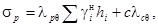
где
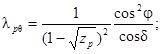
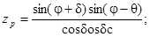
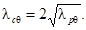
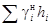
d - угол трения грунта о стенку;
j - то же, что в п. 8.22 настоящей Инструкции.
8.27. При построении эпюр активного и пассивного давлений рекомендуется определять ординаты на границах слоев грунта с неизменными физико-механическими характеристиками, а также в местах пересечения расчетной плоскости восприятия распорного давления с плоскостями обрушения, проведенными из точек начала или скачкообразного изменения равномерно распределенной нагрузки, расположенной на территории причала, считая, что передача давления с территории на расчетную плоскость происходит по плоскости обрушения (рис. 7).
8.28. Расчет элементов надстроек на прочность и трещиностойкость следует выполнять на действие следующих сил:
а) активного давления от собственного веса грунта с учетом эксплуатационных временных крановых и складских нагрузок;
б) нагрузок от воздействия судов (натяжения швартовов, навала пришвартованного судна или навала судна при подходе);
в) нагрузки от собственного веса элементов конструкции надстройки.
8.29. Расчет устойчивости оснований, сложенных из медленно уплотняющихся (сильно сжимаемых) водонасыщенных глинистых и заторфованных грунтов (при степени влажности G ³ 0,85, модуле деформации Е0 £ 500 тс/м2, коэффициенте консолидации Gv £ 1×107 см2/год и показателе консистенции IL ³ 0,75), следует выполнять с учетом нестабилизированного состояния указанных грунтов. Это связано с уменьшением касательного напряжения t по площадке скольжения в результате образования избыточного давления и в паровой воде. При этом касательные напряжения
t = (p - u) tgj1 + c1, (32)
где р - нормальное напряжение.
Рис. 7. Эпюры активного и пассивного давлений от грунта и временных нагрузок. Основные зависимости для рассмотренного примера.
|
Ординаты эпюры активного давления: |
Ординаты эпюры пассивного давления: |
|
|
|
|
|
|
|
|
|
|
|
|
|
|
|
|
|
|
|
|
|
|
|
|
|
|
|
|
|
|
|
|
|
|
|
|
|
|
Избыточное давление и в поровой воде должно определяться с учетом изменения состояния грунта по мере его нагружения в процессе возведения и первоначальной эксплуатации сооружения, а сдвиговые показатели грунтов (по j1 и с1) - в их неконсолидированном или частично консолидированном состоянии.
Допускается проверять устойчивость оснований по методу «нулевого трения», когда внешнее давление уравновешивается поровым, т.е. р = и (тогда t = с1).
При возможности обоснованного прогноза консолидации грунта сдвиговые показатели должны приниматься для полностью стабилизированного состояния грунта по зависимости
t = p tgj1 + c1. (33)
Расчет несущей способности основания сооружения и определение его общей устойчивости для водонасыщенных грунтов должны выполняться по специальным указаниям.
9.1. Расчет причальных сооружений гравитационного типа должен выполняться в соответствии требованиями п. 8.3, а, б, д, л, м настоящей Инструкции и с применением расчетных коэффициентов в соответствии с пп. 8.8 и 8.14 настоящей Инструкции.
Это условие определяется формулой
a ³ 0,333 b (34)
или
е £ 0,167 b. (35)
В формулах (34) и (35):
a - расстояние от передней грани сооружения до точки приложения равнодействующей нагрузок, определяемое по формуле
b - ширина основания сооружения;
е - эксцентриситет приложения равнодействующей нагрузок, определяемый по формуле
e = 0,5 b - a; (37)
Myд - суммарный момент от удерживающих сил относительно переднего ребра вращения;
M0 - суммарный момент от опрокидывающих сил относительно переднего ребра вращения;
g - сумма вертикальных сил, действующих на подошву сооружения.
Допускается выход равнодействующей нагрузок за пределы ядра сечения при увеличенном эксцентриситете для сооружений на скальном основании до е £ 0,25b, на основаниях из твердых и плотных грунтов только в случае расчета на особые сочетания нагрузок и воздействий до е £ 0,2b.
Примечание. К удерживающим следует относить все вертикальные силы, включая и вертикальную составляющую активного давления грунта с учетом возможных временных нагрузок.
Рис. 8. Эпюры краевых напряжений по контакту основания сооружения и каменной постели
s £ R, (38)
где s - краевое напряжение на контакте каменной постели и подошвы сооружения или на контакте грунта основания и подошвы каменной постели, определяемое в соответствии с пп. 9.4 и 9.5 настоящей Инструкции;
R - расчетное сопротивление грунта основания, которое рекомендуется определять в соответствии с указаниями главы СНиП на основания зданий и сооружений.
9.4. Краевые напряжения по контакту основания сооружения и каменной постели при соблюдении условий (34) и (35) (рис. 8, а) определяются по формуле
При несоблюдении (в пределах указаний п. 9.2) условий (34) и (35) (рис. 8, б) краевые напряжения определяются по формуле
(40)
В формулах (39) и (40):
- максимальные и минимальные краевые нормальные напряжения в каменной постели на контакте с основанием сооружения;
R - расчетное сопротивление каменной постели, принимаемое в зависимости от марочной прочности камня с учетом его водонасыщенности. При расчете прочности каменной постели допускается пользоваться рекомендациями прил. 4 к главе СНиП на основания зданий и сооружений.
Остальные обозначения - по п. 9.2 настоящей Инструкции.
где - максимальные и минимальные краевые нормальные напряжения в грунте основания на контакте с каменной постелью;
- то же, что в п. 9.4 настоящей Инструкции;
- ширина, по которой передается давление от сооружения на постель. При соблюдении условий (34) и (35) = b, при несоблюдении указанных условий = 3а;
hп - толщина каменной постели;
- объемная масса камня постели (см. п. 8.21 настоящей Инструкции);
R - расчетное сопротивление грунта основания, принимаемое по инженерно-геологическим отчетам, с учетом указаний главы СНиП на основания зданий и сооружений.
9.6. Толщина каменной постели hп определяется из условия, чтобы краевые напряжения не превышали расчетного сопротивления грунта основания по формуле
Все обозначения в формуле (42) принимаются в соответствии с п. 9.5 настоящей Инструкции.
Примечание. При отрицательной величине подкоренного выражения формулы (42) толщину постели следует принимать по конструктивным требованиям (см. п. 5.6 настоящей Инструкции).
9.7. Расчет устойчивости гравитационных причальных сооружений из условия опрокидывания (поворота) вокруг переднего ребра вращения следует выполнять только в случае выхода равнодействующей всех нагрузок за пределы ядра сечения, т.е. при несоблюдении условий (34) и (35), по формуле
(43)
где nc, n, kн - то же, что в п. 8.8 настоящей Инструкции;
М0 и Муд - соответственно моменты от опрокидывающих и от удерживающих сил относительно рассматриваемого ребра вращения;
т - то же, что в п. 8.14 настоящей Инструкции;
mд - определяют по табл. 7, поз. 4, настоящей Инструкции.
Примечание. Для уголковых стенок с внешней анкеровкой устойчивость на опрокидывание не проверяется.
где nc, n, kн - то же, что в п. 8.8 настоящей Инструкции;
Е - сумма сдвигающих горизонтальных сил, действующих на сооружение;
т - то же, что в п. 8.14 настоящей Инструкции;
g - сумма вертикальных сил, действующих на подошву сооружения;
f - коэффициент трения подошвы сооружения по контакту с каменной постелью; допускается принимать равным 0,5. В обоснованных случаях следует уточнять величину f экспериментальным путем;
mд - принимается по табл. 7, поз. 1, настоящей Инструкции.
Примечание. Временные нагрузки, улучшающие условия устойчивости, из расчета исключаются.
а) для случая постели, заглубленной в грунт основания (рис. 9, а), скольжение по системе плоскостей МК, КЕ и ЕА, - из условия
где nc, n, kн - то же, что в п. 8.8 настоящей Инструкции;
mд, т, Е - то же, что в п. 9.8 настоящей Инструкции;
g1 - часть веса сооружения, передающая давление на грунт в плоскости подошвы постели на участке FК и определяемая по формуле
(46)
g2 - собственный вес каменной постели в контуре ECDK, определяемый по формуле
(47)
g3 - собственный вес засыпки в контуре ВСЕ, равный
(48)
fг - коэффициент трения каменной постели по грунту основания; принимается равным tg jг. В обоснованных случаях следует уточнять значение fг экспериментальным путем;
Рис. 9. Эпюры краевых напряжений по контакту каменной постели и основания:
а - при постели, заглубленной в грунт основания;
б - при постели, расположенной на поверхности грунта основания
Ер - удерживающая горизонтальная сила от грунта засыпки, определяемая по одной из формул:
сопротивление грунта засыпки в контуре ABE
(49)
или пассивного давления грунта
(50)
В расчет по формуле (45) вводится меньшее из полученных значений;
и hп - то же, что в п. 9.5 настоящей Инструкции;
- максимальные и минимальные краевые нормальные напряжения в грунте основания на контакте с каменной постелью от собственного веса сооружения, включая вес грунта и вертикальную составляющую активного давления грунта и временных нагрузок, определяемые по формуле (41) при = 0;
b1 - отрезок ширины постели (см. рис. 9);
и - объемная масса соответственно каменной наброски и засыпки с учетом взвешивания;
m0 - заложение откоса котлована;
lp - то же, что в п. 8.25 настоящей Инструкции,
б) для случая постели на поверхности грунта основания (рис. 9, б):
скольжение по плоскости КЕ - по формуле (45) при g3 = 0 и Ер =0;
скольжение по наклонной плоскости ME - по формуле
(51)
где - сумма проекций на плоскость сдвига ЕМ сил, действующих выше этой плоскости, определяемая по формуле
- сумма проекций сил, действующих выше плоскости сдвига ME, на нормаль к этой плоскости, определяемая по формуле
fк - коэффициент внутреннего трения каменной наброски, который допускается принимать равным tg jк = tg 45° = l,0;
g и E - то же что в п. 9.8 настоящей Инструкции;
g4 - вес части постели в контуре ЕСМ, определяемый по формуле
(54)
y - угол между подошвой стенки и плоскостью сдвига.
9.10. При расчете общей устойчивости гравитационных причальных сооружений по схеме глубинного сдвига следует руководствоваться указаниями пп. 8.15 и 8.16 настоящей Инструкции.
Для гравитационных стенок из массивовой кладки в расчете по круглоцилиндрическим поверхностям скольжения следует в пределах ширины основания стенки собственный вес сооружения, вес материала засыпки и временные нагрузки (рис. 10) над ним приводить к эпюре вертикальных сил по формулам (36) и (39), исключив действие горизонтальных нагрузок, т.е. принимая в формуле (36) значение М0 = 0.
Эксплуатационную нагрузку на территории причала следует располагать в соответствии со схемой на рис. 10.
Рис. 10. Схема расположения эксплуатационных нагрузок:
1 - отметка кордона; 2 - отметка дна
При расчете общей устойчивости сооружения по схеме смешанного сдвига, представленного в СНиП на основания гидротехнических сооружений, необходимо трапецеидальную эпюру напряжений по контакту каменной постели с грунтом основания заменить расчетной равномерной эпюрой и учесть влияние пригрузки интенсивностью над зоной выпирания.
10.1. Причальные сооружения уголкового типа с внутренней анкеровкой и контрфорсные рассчитываются при двух случаях загружения территории причала (рис. 11):
Рис. 11. Схемы загружения территории причала:
1 - отметка кордона; 2 - линия кордона; 3 - колея портала; 4 - плоскость восприятия распора; 5 - плоскость обрушения; 6 - отметка дна
I случай - временная нагрузка располагается над сооружением до линии кордона или до линии возможного загружения по технологическим условиям. При таком расположении нагрузки рассчитываются устойчивость сооружения на плоский сдвиг по постели и вместе с постелью, толщина постели, контактные напряжения в постели и грунте основания, а также усилия для расчета прочности и трещиностойкости элементов конструкций;
II случай - при таком расположении временной нагрузки рассчитывается общая устойчивость сооружения по схеме глубинного сдвига по круглоцилиндрической поверхности скольжения.
10.2. Активное давление грунта с учетом временных нагрузок, расположенных на территории причала, определяется в соответствии с указаниями пп. 8.20-8.24. При этом угол трения d материала засыпки по расчетной тыловой плоскости стенки принимается равным:
0,5 j - по железобетонной тыловой поверхности лицевой плиты или тыловой поверхности контрфорса;
j - по условной наклонной тыловой плоскости стенки, в грунте засыпки (по плоскости восприятия распорного давления).
10.3. При расчете устойчивости уголковых стенок и прочности их основания углы в засыпке (a - между вертикалью и плоскостью восприятия распора и b - между вертикалью и плоскостью обрушения) следует определять:
а) при нагрузке, расположенной на сооружении, - первый случай (см пп. 10.1 и 11.1) - по указаниям п. 8.22 (частный случай) и по формуле (19);
б) при нагрузке, расположенной за сооружением, - второй случай (см. п. 11.1) - по указаниям п. 8.23 и по формуле (17).
При расчете плиты в вертикальном направлении в качестве расчетной принимать условную плоскость восприятия распора, положение которой определяется расстоянием хпл (рис. 12). При этом расстояние хпл, ограниченное тыловой поверхностью лицевой плиты, определяется отношением
(55)
Рис. 12. Схема определения расчетной плоскости
10.6. Лицевая плита в уголковых стенках с внешней и внутренней анкеровкой рассчитывается в двух направлениях, как балка на двух опорах с консолями, на нагрузку от активного давления собственного веса грунта с учетом временных нагрузок. В вертикальном направлении опорами служат анкер и упор на пороге фундаментной плиты, в горизонтальном - ребра тавров.
При расчете плиты в вертикальном направлении горизонтальную составляющую швартовного усилия, нормальную к линии кордона, следует учитывать при определении усилий в наданкерной консоли и не учитывать при определении изгибающего момента в пролете. При этом значение коэффициента тс снижения изгибающего момента в пролете лицевой панели в результате ее деформации и перемещения допускается принимать равным 0,9.
При расчете плиты в горизонтальном направлении рекомендуется по высоте сооружения в соответствии с эпюрой распора выделять характерные расчетные сечения шириной 1 м и принимать для горизонтальных балок равномерную нагрузку, равную средней интенсивности по эпюре распора для выделенного сечения.
11.1. Уголковые причальные сооружения с внешней анкеровкой рассчитываются при четырех случаях загружения территории причала (рис. 13).
Рис. 13. Расчетная схема причального сооружения уголкового типа с внешней анкеровкой (римскими цифрами показаны случаи загружения):
1 - отметка кордона; 2 - линия кордона; 3 - колея портала; 4 - плоскость восприятия распора; 5 - плоскость обрушения; 6 - отметка дна
I случай - временная нагрузка располагается над сооружением до линии кордона или линии возможного загружения по технологическим условиям. При таком расположении нагрузки определяются усилия для расчета лицевой плиты и анкерной тяги, положение равнодействующей нагрузок в основании, контактные напряжения в постели и грунте основания, толщина постели;
II случай - временная нагрузка располагается за сооружением. В этом случае проверяется его устойчивость на плоский сдвиг по постели и вместе с постелью;
III случай - временная нагрузка располагается над стенкой в пределах призмы обрушения на лицевую плиту и за плоскостью обрушения, проведенной из верхней точки анкерной опоры. При таком положении нагрузки рассчитываются анкерные устройства;
IV случай - при таком расположении временной нагрузки сооружение рассчитывается на общую устойчивость по круглоцилиндрическим поверхностям скольжения.
11.2. Устойчивость уголковых стенок с внешней анкеровкой по схеме плоского сдвига, а также нормальные контактные напряжения и толщина каменной постели рассчитываются в соответствии с требованиями пп. 9.2-9.6, 9.8, 9.9 и 10.2-10.4 с учетом следующих дополнительных указаний:
при определении положения равнодействующей нагрузок по формуле (36) удерживающий момент Муд включает в себя удерживающие моменты Mg от вертикальных сил и от усилия в анкере, т.е. Муд = Mg + ;
при определении устойчивости сооружения на плоский сдвиг в формулах (44) и (45) к сумме горизонтальных удерживающих сил (правая часть неравенства) следует прибавить горизонтальную составляющую анкерного усилия Rан, а в формулах (52) и (53) анкерное усилие Rан вычесть из суммы сдвигающих горизонтальных сил.
11.3. Усилия, действующие в лицевой плите, определяются по указаниям пп. 10.2, 10.3, 10.5 и 10.6.
11.4. Для определения изгибающего момента в фундаментной плите рекомендуется метод, основанный на использовании эквивалентного массива с кладкой из обыкновенных бетонных массивов. В качестве эквивалентного принимается массив из бетона марки 150 для стенок с глубиной у причала до 11,5 м и марки 200 - для глубин 13 м и более. При этом соотношение размера В массива в плане к его высоте h принимается равным 4:1 или 3:1 соответственно для глубин у причала до 11,5 м и для глубин 13 м и более.
Изгибающий момент, действующий на 1 пог. м сечения фундаментной плиты,
где mэ - коэффициент, принимаемый равным для сооружений I класса капитальности 0,4; II и III классов - 0,45; IV класса - 0,5;
- нормативное значение осевого растяжения бетона, принимаемое по СНиП на бетонные и железобетонные конструкции гидротехнических сооружений;
- коэффициент перехода к упругопластическим характеристикам бетона (mh - поправочный коэффициент, зависящий от размеров поперечного сечения, определяемый по главе СНиП на бетонные и железобетонные конструкции гидротехнических сооружений);
g = 1,75 - коэффициент для прямоугольного сечения;
W0 = hэ/6 - упругий момент сопротивления сечения эквивалентного массива шириной 1 м и высотой hэ (для глубин у причала до 11,5 м hэ = В/4; для глубин 13 м и более hэ = В/3);
В - длина эквивалентного массива, равная размеру фундаментной плиты в плоскости действия изгибающего момента; при расчете фундаментной плиты в направлении, перпендикулярном линии кордона, равна ширине основания сооружения, в направлении, параллельном линии кордона, - ширине фундаментной плиты.
Примечание. Армирование нижней и верхней зон фундаментной плиты в двух направлениях производится по изгибающим моментам, определенным по формуле (56) с учетом указаний пп. 8.7, 8.10 и 8.11 настоящей Инструкции.
11.5. Растягивающее усилие в анкерной тяге определяется как опорная реакция из расчета лицевой плиты в вертикальном направлении, при этом нагрузки учитываются в соответствии с указаниями пп. 10.4 и 11.1 (I случай).
11.6. Расчет элементов железобетонных конструкций на прочность и трещиностойкость лицевой и фундаментной панелей выполняется в соответствии с указаниями глав СНиП на бетонные и железобетонные конструкции гидротехнических сооружений, на бетонные и железобетонные конструкции и пп. 8.7, 8.8, 8.10 и 8.11 настоящей Инструкции.
12.1. Расчет уголковых причальных сооружений с внутренней анкеровкой на устойчивость по схеме плоского сдвига и общую устойчивость, а также определение толщины постели и нормальных контактных напряжений выполняют по указаниям пп. 9.3-9.10 и 10.1-10.4.
12.2. Изгибающие моменты и поперечные силы, действующие в лицевой плите уголковой стенки с внутренней анкеровкой, определяют на основе расчетов, выполняемых в соответствии с указаниями пп. 10.1, 10.2, 10.4-10.6.
12.3. Усилия, действующие в фундаментной плите, допускается определять обоснованными методами расчета с учетом воздействия лицевой вертикальной плиты, анкерной тяги, пригрузки от грунта засыпки за стенкой, а также неравномерности планировки постели.
12.4. Растягивающее усилие в анкерной тяге определяется как опорная реакция на основе расчета лицевой плиты в вертикальном направлении. Изгибающий момент в анкерной тяге, возникающий под действием давления зависающего грунта, эксплуатационной нагрузки и собственного веса тяги, допускается определять обоснованными методами.
12.5. Расчет лицевой и фундаментной плит на прочность и трещиностойкость выполняется по главам СНиП на бетонные и железобетонные конструкции гидротехнических сооружений, на бетонные и железобетонные конструкции и пп. 8.7, 8.8, 8.10 и 8.11 настоящей Инструкции.
При этом лицевая плита в вертикальном направлении рассчитывается на внецентренное сжатие, в горизонтальном - на изгиб.
12.6. Анкерная тяга и ее крепления рассчитываются на прочность в соответствии с указаниями главы СНиП на стальные конструкции, а также п. 8.9 и прил. 3 к настоящей Инструкции.
13.1. Расчет уголковых стенок контрфорсного типа на плоский сдвиг и общую устойчивость, а также определение нормальных контактных напряжений и толщины постели выполняются по указаниям пп. 9.3-9.10 и 10.1-10.4.
13.2. При расчете лицевой плиты контрфорсной стенки в горизонтальном направлении (см. п. 10.5 настоящей Инструкции) расчетную эпюру активного давления следует определять как разность эпюры активного давления, построенной по указаниям пп. 8.20-8.24 и 10.2, и треугольной эпюры трения с вершиной на территории причала.
При расстоянии между контрфорсами в 4 м основание эпюры трения принимается равным 0,2 нижней ординаты эпюры активного давления, при расстоянии между контрфорсами 2 м - 0,3 нижней ординаты эпюры активного давления (рис. 14).
Расчет лицевой плиты при одном контрфорсе выполняется по схеме консольной балки, при двух контрфорсах - по схеме однопролетной балки с консолями.
По высоте сооружения рекомендуется выделять сечения плиты шириной 1 м с равномерной нагрузкой, средней интенсивности по расчетной эпюре распора для выделенного сечения.
13.3. Лицевая плита контрфорсной стенки в вертикальном направлении рассчитывается по схеме тавровой консольной балки на нагрузку от горизонтальной составляющей швартовного усилия, перпендикулярной кордону (учитывая указания п. 10.4), и на нагрузку от распора (с учетом указаний п. 10.2 настоящей Инструкции). Сбор нагрузок на контрфорс производится с ширины, равной сумме прилегающих полупролетов.
Рис. 14. Эпюры давления на лицевую стенку:
а - активного давления; б - трения; в - суммарная
Рис. 15. Схема учета неполноты контакта фундаментной плиты с основанием
13.4. Фундаментная плита рассчитывается с учетом неполноты контакта поверхности с постелью на суммарную нагрузку от реактивного давления постели снизу (нормальные контактные напряжения) и от пригрузки сверху от собственного веса конструкции и грунта засыпки, а также временных нагрузок.
Неполнота контакта компенсируется увеличением реактивных контактных напряжений от постели за счет условного исключения из расчета площади фундаментной плиты, равной 0,5lа, где а - ширина переднего выступа плиты (рис. 15 и рис. 16).
В этом случае краевые контактные напряжения определяются по формуле
(57)
где - то же, что в п. 9.4 настоящей Инструкции;
g - вертикальная составляющая равнодействующей всех нагрузок, действующих по ширине b (см. также п. 9.2 настоящей Инструкции);
F - площадь плиты в контуре ABCDEF (см. рис. 15), по которой осуществляется контакт с постелью;
Мx и Му - моменты от вертикальной составляющей равнодействующей всех нагрузок относительно соответствующих осей, проходящих через центр тяжести сечения фундаментной плиты в контуре ABCDEF (см. рис. 15);
Wx и Wу - моменты сопротивления площади подошвы фундаментной плиты в контуре ABCDEF относительно соответствующих осей.
Рис. 16. Схема расчета фундаментной плиты сборной уголковой контрфорсной стенки:
а - план сборного блока уголковой контрфорсной стенки; б - результирующая эпюра нагрузок на фундаментную плиту; в - схема работы переднего выступа фундаментной плиты; г - схема работы тыловой консоли фундаментной плиты; 1 - передний выступ фундаментной плиты; 2 - лицевая плита; 3 - контрфорс; 4 - тыловая консоль фундаментной плиты
При проведении статического расчета фундаментной плиты (см. рис. 16, а и в) передний выступ следует рассчитывать в направлении, перпендикулярном линии кордона, как консольную балку; тыловую часть плиты - в направлении, параллельном линии кордона: при одном контрфорсе - как консольную балку, при двух контрфорсах - как балку на двух опорах с консолями. При этом следует выделять сечения плиты шириной 1 м и загружать нагрузкой средней интенсивности по суммарной эпюре давления (см. рис. 16, б и г).
13.5. Расчеты лицевой плиты, контрфорса и фундаментной плиты на прочность и трещиностройкость следует выполнять в соответствии с указаниями глав СНиП на бетонные и железобетонные конструкции гидротехнических сооружений, на бетонные и железобетонные конструкции и пп. 8.7, 8.8, 8.10 и 8.11 настоящей Инструкции.
Примечание. Для фундаментной плиты следует принимать двойное армирование, так как она рассчитывается по двузначной эпюре давления (см. рис 16, б).
14.1. При расчете причальных сооружений из массивовой кладки следует рассматривать пять случаев загружения территории (рис. 17):
Рис. 17.
Расчетная схема причального сооружения из массивовой кладки
(римскими цифрами показаны различные случаи загружения):
1 - отметка кордона, 2 - линия кордона; 3 - колея портала; 4 - обратный фильтр; 5 - каменная разгрузочная призма; 6 - каменная постель; 7 - отметка дна, а - величина, которая принимается по нормам технологического проектирования морских портов
I случай - временная нагрузка располагается за пределами стенки, начиная от тылового обреза разгрузочной платформы. При таком расположении нагрузки выполняются расчеты на устойчивость по схеме плоского сдвига по контакту стенки с постелью, совместно с постелью и по швам кладки, проверяется положение равнодействующей нагрузок (эксцентриситет) по подошве стенки и в швах кладки, а также в необходимых случаях - устойчивость на опрокидывание (на поворот вокруг переднего ребра);
II случай - временная нагрузка располагается над тыловой частью сооружения и распределяется на 1/3 ширины массива предпоследнего курса кладки. Указанный случай является определяющим при проверке растягивающих нормальных напряжений со стороны акватории в шве основания верхнего курса массивов;
III случай - временная нагрузка располагается над стенкой до линии кордона или линии возможного загружения по технологическим условиям. В указанном расчетном случае определяются максимальные нормальные контактные напряжения в каменной постели на контакте с основанием стенки и в грунте основания на контакте с каменной постелью. Кроме того, определяются толщина постели, а также усилия в лицевой стенке надстройки при расчете ее по прочности и раскрытию трещин;
IV случай - временная нагрузка располагается за пределами надстройки, над тыловой частью сооружения. Указанный расчетный случай является определяющим для расчета устойчивости надстройки;
V случай - по п. 9.10 при расчете на общую устойчивость по круглоцилиндрическим поверхностям скольжения (сдвига) (см. рис. 10).
14.2. Распорное давление на массивную стенку от собственного веса грунта и временных нагрузок определяется в соответствии с указаниями пп. 8.20-8.24, с учетом трения материала засыпки по тыловой плоскости стенки (по плоскости восприятия распора). При этом следует иметь в виду, что:
а) угол трения d материала засыпки по грунту в пределах высоты надстройки принимается равным углу j3 внутреннего трения материала засыпки;
б) угол трения d каменной наброски по тыловой поверхности бетонных массивов в пределах высоты разгрузочной призмы принимается равным 0,5 jк (jк - угол внутреннего трения каменной наброски);
в) угол трения d материала засыпки по тыловой поверхности бетонных массивов (из-за ограниченного простирания слоя каменной отсыпки) принимается равным 0,5 j3.
14.3. В пределах высоты надстройки при расчете ее на устойчивость угол наклона a плоскости восприятия распора в грунте засыпки и соответствующий ему угол обрушения b определяются в соответствии с указаниями п. 8.23 настоящей Инструкции.
Примечание. При надстройках высотой до 3 м и временной нормативной нагрузке qн £ 4 тс/м2 плоскость восприятия распора вертикальна и угол обрушения b вычисляется при a = 0 и Sb = 0.
14.4. В пределах каменной разгрузочной призмы эпюра активного давления строится по указаниям п. 8.24. Ординаты Dsi дополнительного давления от пригрузки грунта из-за неполноты простирания каменной наброски (рис. 18) рассчитываются по формуле (20). Тогда ординаты Dsi равны:
в точке А¢
(58)
в точке Б¢
(59)
в точке A
(60)
в точке Б
(61)
Здесь
(62)
(63)
где lа.г и lа.к - коэффициенты активного давления соответственно грунта и камня.
Остальные обозначения принимаются по рис. 18.
Рис. 18. Расчетная схема определения дополнительного активного давления при наличии каменной разгрузочной призмы
Силу и момент от пары сил следует распределять равномерно по всей длине секции, учитывая, что на 1 пог. м причала действуют:
сила
(64)
момент от пары сил
(65)
Здесь - поперечная горизонтальная составляющая швартовного усилия, определяемая по главе СНиП на нагрузки и воздействия на гидротехнические сооружения (волновые, ледовые и от судов);
L - длина секции;
Z - плечо пары сил, равное расстоянию, на которое переносится сила (рис. 19).
Рис. 19. Поперечный разрез и фасад секции причальной набережной из массивовой кладки
(66)
где - продольная горизонтальная составляющая швартовного усилия, определяемая в соответствии с главой СНиП на нагрузки и воздействия на гидротехнические сооружения (волновые, ледовые и от судов);
- то же, что в п. 14.5 настоящей Инструкции;
- горизонтальная составляющая активного давления грунта с учетом временных нагрузок на секцию длиной L.
14.7. Расчет устойчивости сооружения и отдельных его частей по швам кладки, определение толщины постели и контактных нормальных напряжений в основании и швах следует выполнять в соответствии с указаниями пп. 9.3-9.9 и 14.1-14.6 настоящей Инструкции.
Примечания: 1. Коэффициент трения бетона по бетону допускается принимать для надводной части сооружения f = 0,6; подводной - f = 0,5.
2. Следует выполнять поверочный расчет сооружения на устойчивость по схеме плоского сдвига при максимальном уровне воды.
3. При определении нормальных краевых напряжений в шве основания верхнего курса массивов швартовную нагрузку учитывать не следует.
Рис. 20. Схема расчета несущей способности и прочности консольного свеса массива:
1 - отметка кордона; 2 - консольный свес
14.8. При расчете несущей способности и прочности консольного свеса верхнего курса массивов рекомендуется принимать плечо консоли lк = а + 0,333 b [b - ширина нижележащего опорного массива (рис. 20)]. Прочность консольного свеса массива должна рассчитываться по ослабленному ключевыми отверстиями сечению с учетом распорного давления от собственного веса грунта.
Распорное давление от собственного веса грунта при расчете консольного свеса на изгиб следует учитывать в случаях, когда марочная прочность бетона по расчету превышает 300 кгс/см2. Сила распорного давления принимается приложенной с эксцентриситетом в соответствии с трапецеидальной эпюрой распора. Расчет выполняется на внецентренное сжатие с относительно малым эксцентриситетом в соответствии с главой СНиП на бетонные и железобетонные конструкции гидротехнических сооружений и пп. 8.7, 8.8, 8.10 и 8.11 настоящей Инструкции.
14.9. Расчет лицевой плиты железобетонной надстройки на прочность и трещиностойкость следует выполнять в соответствии с указаниями глав СНиП на бетонные и железобетонные конструкции гидротехнических сооружений, на бетонные и железобетонные конструкции, а также пп. 8.7, 8.8, 8.10 и 8.11 настоящей Инструкции.
Расчет гравитационных причальных сооружений из оболочек большого диаметра, к которым относятся оболочки с соотношением высоты к диаметру не более 0,7, должен выполняться с учетом указаний разд. 8 и 9 настоящей Инструкции.
Специальные виды заанкерованных больверков (с экранирующими элементами, с передней грунтовой пригрузкой, с передним экраном, больверков-оторочек и т.д.) следует проектировать с учетом основных требований настоящей Инструкции.
Примечание. Критерий жесткости и соответствующие ему расчетные схемы устанавливаются в соответствии с пп. 16.8-16.11.
16.2. Расчет причальных сооружений, указанных в п. 16.1, должен выполняться в соответствии с требованиями п. 8.3, а, в, г, д, з, к, л, м, настоящей Инструкции.
16.3. За расчетную плоскость восприятия активного давления лицевой стенкой больверков следует принимать:
для стенок из металлического шпунта корытного и зетового профилей - плоскость, проходящую через нейтральную ось поперечного сечения стенки;
для стенок из металлического шпунта двутаврового профиля и плоского железобетонного шпунта - плоскость, проходящую по тыловой полке или грани;
для стенок кольцевых сечений - плоскость, проходящую по тыловой грани элементов;
для стенок из тавровых сечений - плоскость, проходящую на расстоянии хпл от тыловой поверхности ребер (см. п. 10.5 для лицевых плит уголковых стенок при расчете их в вертикальной плоскости).
Эпюры активного и пассивного давлений строятся в соответствии с указаниями пп. 8.20-8.24 настоящей Инструкции. При этом в призме распора угол трения d материала засыпки и грунта основания по расчетной плоскости лицевой стенки больверка, анкерной стенки и анкерной плиты допускается принимать равным 0,5 j.
Угол трения грунта по расчетной плоскости в призме выпора следует принимать:
для лицевой стенки больверка, рассчитываемой по теории предельного равновесия (см. п. 8.25 настоящей Инструкции), - d = j (но не более 30°), при расчете по классической теории - d = 0,75 j;
для анкерной стенки - d = 0,333 j;
для анкерной плиты - d = 0.
Примечание. Угол трения грунта по анкерной плите в призме выпора допускается принимать d = 0,333 j при специальном обосновании.
16.5. При наличии в основании шпунтовых стенок слабых глинистых (илистых) грунтов следует учитывать их сильную сжимаемость, а при слоистом залегании - разность сжимаемости ила и других грунтов. Следует также проверить возможность проявления в иле под нагрузкой полного порового давления и перехода его в состояние давления тяжелой жидкости (j = 0).
Активное и пассивное давления илистого грунта на стенки следует определять по специальным указаниям.
Примечания: 1. К слабым сильносжимаемым глинистым водонасыщенным (илистым) относятся грунты со следующими физико-механическими характеристиками: степень влажности G ³ 0,85; коэффициент консолидации Сv £ 1×107 см2/год; показатель консистенции IL = 0,75; модуль деформации, определенный на компрессионном приборе, E = 500 тс/м2.
2. Для илистых грунтов допускается интенсивность эпюр активного и пассивного давлений вычислять по формулам (10) и (24) при значениях la и lp до единицы.
устойчивости на сдвиг призмы замененного грунта перед стенкой по плоскости контакта с грунтом основания (см. прил. 7 к настоящей Инструкции) и определения отпора грунта по формулам пассивного давления в предположении слоя замененного грунта бесконечной длины (см. п. 8.25 настоящей Инструкции). Для расчета больверка принимается наименьшее из полученных значений.
Угол трения d материала отсыпки по плоскости восприятия отпора лицевой стенкой принимать в зависимости от материала засыпки и способа производства работ равным нулю или 0,333 j3 (где j3 - угол внутреннего трения грунта засыпки).
Расчетом определяют глубину погружения и усилия, действующие на 1 пог. м лицевой стенки, - изгибающий момент М, поперечную силу Q и анкерную реакцию Rа.
16.8. Расчетные схемы для заанкерованных стенок из железобетонных элементов следует принимать в зависимости от значения отношения dc/t (где dс - высота приведенного к прямоугольнику железобетонного элемента стенки; t - глубина погружения стенки, рассчитанная в предположении ее полного защемления).
При dc/t £ 0,06 стенку следует рассматривать как гибкую и рассчитывать как защемленную или частично защемленную.
При dc/t > 0,06 стенку следует считать повышенной жесткости и рассчитывать как свободно опертую.
16.9. Высота приведенного сечения железобетонных элементов бетона марки 300 определяется по формуле
где I - момент инерции железобетонного элемента стенки;
b - размер элемента стенки в направлении линии кордона (для оболочек b = D, где D - диаметр оболочки, для таврового шпунта b = bп, где bп - ширина полки);
D - проектный зазор между железобетонными элементами стенки.
Примечания: 1. Для прямоугольного железобетонного шпунта приведенная высота сечения равна действительной, т. е dc = h.
2. В случае применения железобетонных элементов лицевых стенок с маркой бетона выше 300 в числитель формулы (67) следует ввести множитель nE, равный отношению начального модуля упругости бетона элемента к модулю упругости бетона марки 300. Тогда
(67)
16.10. При статическом расчете гибких стенок с полным защемлением замыкающая веревочного многоугольника в графоаналитическом расчете проводится через точку пересечения линии анкера с первым лучом из условия равенства изгибающих моментов в пролете и в заделке, т.е. М = Мз.
Примечание. Если в основании сооружения грунты имеют физико-механические характеристики, резко отличающиеся от характеристик грунтов засыпки, рекомендуется уточнять усилия, действующие в стенке, путем построения упругой кривой.
tp = t + Dt, (69)
где t - глубина погружения лицевой стенки из графоаналитического расчета, принимаемая от дна до пересечения замыкающей с веревочным многоугольником в нижней его точке;
Dt - дополнительная глубина погружения лицевой стенки, обеспечивающая ее защемление, определяемая по формуле
где - равнодействующая обратного отпора по силовому многоугольнику из графоаналитического расчета;
с, la - то же, что в п. 8.20 настоящей Инструкции;
lр и lрс - то же, что в п. 8.25 настоящей Инструкции.
Примечание. При определении Dt по формуле (70) значения lр, lрс, la и laс следует принимать в соответствии с методом определения давления грунта, принятым в основном расчете лицевой стенки.
16.13. Расчетную глубину погружения tp лицевой стенки при частичном защемлении или свободном опирании следует проверять из условия устойчивости на поворот вокруг точки крепления анкера по формуле
где nс, п, kн - то же, что в п. 8.8 настоящей Инструкции;
mД - принимается по табл. 7 настоящей Инструкции:
Мпов - момент активных сил, поворачивающих (сдвигающих) стенку вокруг точки крепления анкера;
т - то же, что в п. 8.14 настоящей Инструкции;
Муд - момент пассивных сил и наданкерных активных сил, удерживающих стенку от поворота вокруг точки крепления анкера.
Примечание. Величину и положение равнодействующих активных и пассивных сил следует определять по раздельным, а не по суммарным эпюрам давления.
Допускается в первом приближении дополнительную глубину погружения лицевой стенки при несоблюдении условия (71) определять по формуле
(72)
где Мдоп - дополнительный удерживающий момент, необходимый для обеспечения устойчивости стенки, определяемый по формуле
(73)
- ординаты соответственно пассивного и активного давления на глубине , определяемые по формулам (24) и (10);
- плечо, равное расстоянию от точки крепления анкера до сечения на глубине ;
- глубина погружения, полученная графоаналитическим расчетом по схеме частичного защемления или свободного опирания, на которой не выполнено условие (71).
16.14. В тех случаях, когда расчетная глубина погружения лицевой стенки tp из условия (71) превышает более чем на 30 % глубину погружения t0, полученную графоаналитическим расчетом лицевой стенки по схеме свободного опирания (см. п. 16.11 настоящей Инструкции), следует откорректировать значения изгибающего момента М и анкерной реакции Rа в лицевой стенке.
В тех случаях, когда глубина tp £ 2t0, допускается корректировать значения изгибающего момента в лицевой стенке и анкерной реакции Rа умножением их на коэффициенты приведения, назначаемые по табл. 8.
Таблица 8
|
Значение коэффициента приведения при tp/t0, равном |
||||
|
менее 1,3 |
1,4 |
1,8 |
2,0 |
|
|
Изгибающий момент |
1,00 |
1,15 |
1,40 |
1,45 |
|
Анкерная реакция |
1,00 |
1,10 |
1,20 |
1,25 |
16.15. Значение изгибающего момента в пролете лицевой стенки, действующего на один элемент,
где Ммакс - максимальный изгибающий момент в пролете из графоаналитического расчета, определяемый произведением полюсного расстояния h силового многоугольника в масштабе сил на максимальную ординату хмакс веревочного многоугольника в пролете в масштабе длин;
тс - коэффициент, учитывающий перераспределение давления грунта на стенку за счет ее деформации и перемещения. Значение коэффициента тс допускается принимать в зависимости от отношения dс/l - высоты приведенного сечения dс (см. п. 16.9) к условному пролету l по табл. 9.
Таблица 9
|
Коэффициент mс снижения изгибающего момента при |
|||
|
dс/l £ 0,04 |
0,04 < dс/l < 0,10 |
dс/l ³ 0,10 |
|
|
Песок |
0,75 |
0,85 |
1,00 |
|
Камень |
0,65 |
0,75 |
1,00 |
DMн - дополнительный изгибающий момент в лицевой стенке от ветрового навала или навала судна при подходе к сооружению на уровне максимальной ординаты веревочного многоугольника в пролете, вводимый в расчет специальных видов заанкерованных больверков (см. п. 16.1 настоящей Инструкции);
b и D - то же, что в п. 16.9 настоящей Инструкции;
l - условный пролет, определяемый по формуле
(75)
где h - высота от уровня крепления анкерной тяги до дна;
t0 - глубина погружения, полученная из графоаналитического расчета, от дна до точки касания с веревочной кривой в нижней её части.
Примечание. В случае расчета сооружения на нагрузки с учетом волнового воздействия следует руководствоваться указаниями п. 16.17, б.
16.16. Значения изгибающего момента и поперечной силы в опорном сечении (в точке крепления анкерной тяги) лицевой стенки, действующие на один элемент, определяются по формулам:
где Mоп - изгибающий момент на уровне крепления анкера, определяемый из графоаналитического расчета произведением полюсного расстояния h на ординату хоп веревочного многоугольника на уровне крепления анкера в масштабе длин;
Qоп - поперечная сила на уровне крепления анкера, определяемая из графоаналитического расчета разностью между анкерной реакцией Rа и наданкерной частью активного давления грунта и временной нагрузки;
b и D - то же, что в п. 16.9 настоящей Инструкции.
а) нагрузки от ветрового статического навала пришвартованного судна и от навала судна при подходе к сооружению используются при расчете местной прочности надстройки, ее связей с лицевой стенкой, отбойных устройств и их креплений;
б) в случае учета волнового воздействия (см. п. 8.18 настоящей Инструкции) расчет лицевой стенки следует проводить в два этапа. На первом (основном) этапе расчет лицевой стенки выполняется графоаналитическим методом на нагрузку от давления грунта с учетом временных вертикальных нагрузок, на втором - с дополнительной нагрузкой от волнового воздействия. В процессе расчета на втором этапе первоначально следует замыкающую пересекать с веревочной кривой на глубине, значение которой получено на первом этапе расчета.
В зависимости от результата расчета возможно увеличение глубины забивки или усиление поперечного сечения лицевой стенки на основании сравнения технико-экономических показателей.
Для подбора сечения лицевой стенки расчетное значение изгибающего момента в пролете на первом этапе расчета следует определять по формуле (74), на втором - по формуле
(78)
где mв = 0,9 - коэффициент условий работы, учитывающий волновое воздействие;
Mмакс и Ммакс2 - максимальные изгибающие моменты в пролете лицевой стенки, полученные соответственно на первом и втором этапах расчета;
тс - то же, что в п. 16.15 настоящей Инструкции;
b и D - то же, что в п. 16.9 настоящей Инструкции.
Сечение стенки выбирается по наибольшему из полученных значений.
Расчет анкерной системы выполняется на анкерное усилие, полученное на втором этапе расчета лицевой стенки больверка.
где mв - то же, что в п. 16.17, б, при определении усилия в анкере на втором этапе расчета;
mа - коэффициент, учитывающий перераспределение давления на стенку, а также неравномерность натяжения анкерных тяг;
Rа - -то же, что в п. 16.7 настоящей Инструкции;
la - шаг анкерных тяг.
Значение коэффициента mа следует принимать равным:
для стенок с предварительным натяжением анкеров - 1,30;
для стенок и плит без предварительного натяжения анкеров - 1,50;
для расчета прочности распределительного пояса и деталей его крепления - 1,25.
(80)
1,10 Pнh £ 0,75 Mp, (81)
где h - то же, что в п. 16.15 настоящей Инструкции;
Ec и Ea - соответственно модули упругости материала лицевой стенки и анкерной тяги;
Ic - момент инерции расчетного сечения лицевой стенки на ширине, равной шагу анкеров;
- усилие в анкере при полном расчетном загружении сооружения;
La и Fa - длина и площадь сечения анкерной тяги;
Мp - изгибающий момент в лицевой стенке, приведенный к ширине, равной шагу анкеров.
16.20. Анкерные опоры в виде гибких стенок следует рассчитывать графоаналитическим методом с учетом указаний пп. 16.4, 16.21-16.23.
Примечание. Временную эксплуатационную нагрузку следует располагать за плоскостью обрушения, проведенной из верхней точки анкерной стенки.
16.21. Усилия в анкерных стенках следует определять из графоаналитического расчета на действие нагрузок от суммарной эпюры давления грунта и анкерной реакции Ra (где Ra определяется по п. 16.7 - см. рис. 22).
Примечание. Против тумбового массива анкерное усилие Ra следует суммировать с распределенным на длине Lт тумбового массива усилием Ешв от нормальной составляющей швартовной нагрузки с учетом высоты ее приложения по отношению к уровню крепления анкерной тяги. Усилие Ешв определяется по формуле (обозначения показаны на рис. 21)
(82)
16.22. Полная высота анкерной стенки (рис. 22) определяется из условия ее устойчивости по формуле
hс = t1 + tс + Dt, (83)
где t1 - наданкерная высота анкерной стенки;
tс - глубина погружения из графоаналитического расчета от анкера до пересечения замыкающей с веревочным многоугольником при действии на стенку анкерной реакции, определяемой из условия mдRа;
Рис. 21. Схема к расчету усилий в анкерных тягах
Рис. 22. Расчетная схема анкерной стенки:
а - суммарная
эпюра давления; б - веревочный многоугольник; в - силовой
многоугольник;
1 - отметка кордона; 2 - анкер
mд - по табл. 7, поз. 7, настоящей Инструкции;
Ra - то же, что в п. 16.7 настоящей Инструкции;
Dl - дополнительная глубина на защемление, определяемая по формуле
(84)
где - то же, что в п. 16.12 настоящей Инструкции;
nt = 0,8 - коэффициент безопасности.
Остальные обозначения приняты в соответствии с пп. 8.20 и 8.25 настоящей Инструкции.
Примечание. О методе расчета давления грунта см. примечание к п. 16.12 настоящей Инструкции.
16.23. Усилия, действующие на один элемент анкерной стенки, при расчете ее прочности и трещиностойкости определяются по формулам (74), (76) и (77) при коэффициенте mс = 1.
16.24. При заглублении гребня анкерной плиты на глубину, равную ее высоте, отпор и распор грунта принимаются в пределах от подошвы плиты до поверхности территории (рис. 23, а).
При больших заглублениях анкерной плиты грунтовые нагрузки, действующие непосредственно на анкерную плиту, учитываются лишь в пределах ее высоты.
Рис. 23. Расчетные схемы анкерных плит
a
- для определения устойчивости, б - для определения усилий в
железобетонных ребристых плитах,
1 - отметка кордона
В качестве основного варианта расположения анкерной плиты следует принимать заглубление ее гребня на величину, равную высоте плиты, из условия
где nc, n, kн - то же, что в п. 8.8 настоящей Инструкции;
mд - по табл. 7 настоящей Инструкции;
Rа - то же, что в п. 16.7 настоящей Инструкции;
m - то же, что в п. 8.14 настоящей Инструкции;
Еp - равнодействующая пассивного давления в пределах отметки территории и подошвы анкерной плиты от собственного веса грунта засыпки;
Еа - равнодействующая активного давления в пределах отметки территории и подошвы анкерной плиты от собственного веса грунта засыпки и временной нагрузки, расположенной со стороны призмы распора.
Примечания. 1 Временную эксплуатационную нагрузку в расчете следует располагать на территории причала за плоскостью обрушения, проходящей через верхнюю точку анкерной плиты.
2. При расчете анкерных плит тумбовых массивов анкерная реакция Rан, получаемая графоаналитическим расчетом, суммируется с равномерно распределенным усилием от горизонтальной составляющей швартовной нагрузки с учетом высоты ее приложения по отношению к уровню крепления анкерной тяги (см. примечания к п. 17.21 настоящей Инструкции)
16.25. Усилия, действующие в элементах железобетонных ребристых анкерных плит (рис. 23, 6), определяются:
а) в плите - как в балке на двух опорах с консолями от равномерно распределенной нагрузки на 1 м2, т.е.
б) в ребре - как в консольной балке, защемленной в уровне крепления анкерной тяги [в середине высоты анкерной плиты при расчете ее по формуле (85), а при расчете ее на грунтовые нагрузки в пределах высоты плиты - по центру тяжести суммарной эпюры расчетного давления грунта], от равномерно распределенной нагрузки на 1 пог. м консоли, т.е.
В формулах (86) и (87):
lп - длина анкерной плиты;
D - проектный зазор между анкерными плитами;
Ra - то же, что в п. 16.7 настоящей Инструкции;
hп - высота анкерной плиты.
16.26. Расстояние между лицевой стенкой и анкерными плитами и стенками (рис. 24) следует принимать из условия пересечения на поверхности территории плоскости обрушения, проведенной от расчетной плоскости лицевой стенки из точки на уровне касания замыкающей к веревочному многоугольнику сил, с плоскостью выпора, проведенной от подошвы анкерной плиты, а для анкерной стенки - из точки, отстоящей вверх от подошвы на 2Dt (Dt - то же, что в п. 16.22 настоящей Инструкции).
Расстояние между лицевой стенкой и анкерными опорами следует определять по формуле
где - сумма расстояний от отметки кордона до точки касания замыкающей к веревочному многоугольнику из графоаналитического расчета лицевой стенки;
- сумма расстояний от отметки кордона до подошвы анкерной плиты, а в анкерных стенках - выше подошвы на 2Dt;
ji - угол внутреннего трения грунта основания и засыпки, соответствующий i-му слою грунта.
16.27. Если по общим компоновочным требованиям (из-за стесненности территории) или технико-экономическим соображениям возможно и целесообразно приблизить анкерные опоры к лицевой стенке с нарушением условия (88) или если в поверхностных слоях основания между лицевой стенкой и анкерными устройствами залегают грунты значительно слабее по прочностным свойствам, чем грунты засыпки, следует расчетом проверить анкерующую способность массива грунта.
Рис. 24. Схема для определения расстояния Lа между лицевой стенкой и анкерными опорами:
Устойчивость массива грунта, обеспечивающего анкерное крепление, определяется из условия
где nc, n, kн - то же, что в п. 8.8. настоящей Инструкции;
mд - дополнительный коэффициент условий работы, принимаемый по табл. 7 настоящей Инструкции;
Rа - то же, что в п. 16.7 настоящей Инструкции;
т - то же, что в п. 8.14 настоящей Инструкции;
Rмасс - горизонтальная составляющая равнодействующей сил, действующих на массив грунта, расположенный между лицевой стенкой и анкерной опорой.
Примечание. Определение положения поверхности скольжения и величины Rмасс приведены в прил. 8
16.28. При невыполнении условия (89) для сооружений с анкерными стенками (в зависимости от технико-экономической целесообразности) следует увеличить расстояние между лицевой и анкерной стенками или заглубить подошву анкерной стенки.
16.29. В случае сокращения расстояния между анкерными опорами и лицевой стенкой по сравнению с требованиями формулы (88) уменьшенную величину пассивного давления на анкерные опоры допускается определять по указаниям прил. 9.
16.30. Проверку общей устойчивости причальных сооружений, типа заанкерованного больверка, на глубинный сдвиг следует выполнять только в тех случаях, когда:
в основании причального сооружения непосредственно под подошвой и глубже имеются прослойки слабого грунта, вдоль которого может произойти скольжение (сдвиг) и в результате - нарушение устойчивости сооружения;
в тыловой части причального сооружения, включенной в зону, ограниченную возможной поверхностью сдвига (скольжения), имеются эксплуатационные нагрузки, более чем в три раза превосходящие нагрузки прикордонной зоны.
16.31. Расчет конструктивных элементов больверков (лицевой стенки, анкерных тяг, деталей крепления анкерной системы и анкерных опор) следует выполнять в соответствии с указаниями глав СНиП на стальные конструкции, на бетонные и железобетонные конструкции гидротехнических сооружений, на бетонные и железобетонные конструкции, разд. 16 и пп. 8.7-8.11 настоящей Инструкции.
17.1. Проектирование причальных сооружений на сваях и сваях-оболочках из железобетона и металла должно включать следующие этапы:
а) определение нагрузок, действующих на секцию сооружения, и их сочетаний с учетом взаимодействия секций;
б) выбор конструктивной схемы сооружения и предварительных основных размеров его элементов, который должен осуществляться на основании технико-экономического сравнения вариантов конструктивных схем причала в целом;
в) расчет основной пространственной конструкции сооружения и определение усилий в ее элементах (см. пп. 17.2-17.9 настоящей Инструкции);
г) расчет свай, свай-оболочек и свайных ростверков в целом по несущей способности (устойчивости) и по деформациям (перемещениям, углам поворота, прогибам) в соответствии с требованиями главы СНиП на свайные фундаменты и п. 17.25 настоящей Инструкции;
д) конструктивный расчет элементов сооружения (по прочности, трещиностойкости и деформациям) в соответствии с требованиями глав СНиП на бетонные и железобетонные конструкции гидротехнических сооружений, на бетонные и железобетонные конструкции, на стальные конструкции, а также пп. 7.3, б, 8.7-8.11 настоящей Инструкции;
ж) расчет общей устойчивости сооружения и устойчивости подпричального откоса при выбранной конструктивной схеме сооружения и расчетном сочетании нагрузок следует производить в соответствии с требованиями главы СНиП на основания гидротехнических сооружений и специального нормативного документа с учетом указаний пп. 8.12-8.16 настоящей Инструкции. При этом коэффициенты mд, вводимые в расчет, принимаются по табл. 7.
Примечание. Для более точного расчета произвольных статически неопределимых стержневых систем, а также сокращения времени и повышения качества проектирования следует использовать автоматизированный расчет пространственных систем.
Примечание. В качестве основной несущей системы следует принимать поперечные рамы при поперечно-ригельной схеме ростверка и продольные рамы - при продольно-ригельной схеме.
В «условный ригель» (А, В, С - рис. 25), входящий в состав омоноличенного ростверка, включают:
для прикордонной или тыловой рамы - полосу ростверка от конца до середины пролета, примыкающего соответственно к прикордонному или тыловому ряду опор;
для средних продольных рам - полосу ростверка в пределах левого и правого примыкающих полупролетов.
Примечание. Приводимые в п. 17.3 и далее указания применительно к поперечно-ригельным системам соответственно могут быть использованы также при расчете продольно-ригельных систем.
17.4. При установлении расчетных схем плоских систем в качестве осей элементов следует принимать линии, соединяющие геометрические центры тяжести сечений элементов. Расчетная высота стоек рам определяется в соответствии с указаниями п. 17.16 настоящей Инструкции.
Рис. 25. Поперечно-ригельная конструкция:
А, В, С
- «условные ригели» продольных рам:
1-5 - сборные элементы ростверка; 6 - ригель поперечной
рамы
17.5. Вертикальные нагрузки на поперечные рамы (основные несущие системы) определяются по максимальным опорным реакциям продольных систем с учетом собственного веса элементов поперечной рамы.
Примечание. В случае применения продольно-ригельных ростверков сначала рассчитываются поперечные плоские системы, опорные реакции которых принимаются как нагрузки на ригели продольных рам.
17.6. Горизонтальные нагрузки на продольные и поперечные рамы определяются как алгебраические суммы соответствующих нагрузок на опоры каждой рамы. Горизонтальные нагрузки, действующие на расчетную секцию, распределяются между опорами рам в предположении абсолютной жесткости верхнего строения ростверка в горизонтальной плоскости. При этом кручение опор вокруг собственной оси не учитывается (см. пп. 17.10-17.15).
17.7. Исходные усилия (изгибающие моменты М, перерезывающие силы Q и продольные силы N - реакции опор) при конструктивном расчете элементов определяются суммированием соответствующих усилий, полученных из расчета плоских систем на вертикальные и горизонтальные нагрузки. Усилия, действующие на «условный ригель», распределяются между составляющими его элементами пропорционально их жесткости.
Примечание. Для элементов, у которых в состав расчетных сочетаний входят временные подвижные и равномерно распределенные нагрузки, расчетные суммарные эпюры М и Q строятся по линиям влияния.
17.9. Усилия в элементах рамных конструкций причалов эстакадного типа, вызванные межсезонным перепадом температур, следует определять с учетом деформации ползучести либо с применением временного длительного модуля деформации в соответствии с главой СНиП на бетонные и железобетонные конструкции гидротехнических сооружений.
(90)
где - погонная жесткость свайных опор;
l - расчетная длина свайных опор, определяемая по указаниям пп. 17.16-17.20 настоящей Инструкции;
Е - начальный модуль упругости материала опор;
I - момент инерции сечения опоры.
(91)
где - коэффициент;
- коэффициент;
a1 и a2 - углы наклона свай козловых опор к вертикали;
Е - то же, что в п. 17.10 настоящей Инструкции;
F - площадь сечения свай козловых опор;
l1 и l2 - расчетные длины свай козловых опор (см. пп. 17.16-17.20 настоящей Инструкции).
Рис. 26. Схема к расчету горизонтальных нагрузок на опоры от вращения секции. Контуры верхнего строения ростверка показаны пунктиром
17.12. Горизонтальные нагрузки, действующие на расчетную секцию, допускается распределять между опорами секции путем переноса равнодействующей горизонтальных сил А в упругий центр системы (рис. 26) и приведения их к силе Т, действующей параллельно кордону, силе N, действующей перпендикулярно кордону, и моменту, вызывающему вращение секции относительно упругого центра,
(92)
где М - момент от действия судовых нагрузок, давления грунта и временных нагрузок на тыловую грань ростверка;
А - равнодействующая горизонтальных сил;
r - расстояние от линии действия равнодействующей до упругого центра (см. рис. 26);
и - то же, что в п. 14.6 настоящей Инструкции;
L - длина секции;
xN, yт, yE - расстояние от упругого центра до соответствующих сил;
Еi - распорное давление от собственного веса грунта и временных нагрузок, действующих на тыловую грань ростверка, на 1 пог. м сооружения;
fi - коэффициент трения материала засыпки по тыловой грани ростверка.
Примечание. За упругий центр системы принимается точка, проходя через которую равнодействующая A вызывает только поступательное смещение секции.
17.13. Координаты упругого центра определяются по формулам:
(93)
(94)
где Hyi и Hxi - реакции опор от единичного горизонтального смещения по пп. 17.10 и 17.11 настоящей Инструкции;
xi и уi - координаты опор относительно осей х и у (см. рис. 26).
Примечание. Для упрощения определения и отсчета координат упругого центра целесообразно за начало координат принимать точку О пересечения осей крайних рядов опор (см. рис. 26).
17.14. Усилия в элементах свайного основания:
от составляющих и
(96)
от момента М
(97)
(98)
Суммарные усилия, действующие на опору, от составляющих и (см. рис. 26) и момента М = Аr определяются по формулам:
В формулах (95)-(100);
Pxi, , - усилия, действующие на опору вдоль оси х;
Pyi, , - усилия, действующие на опору вдоль оси у;
Hxi, Hyi - то же, что в пп. 17.10 и 17.11 настоящей Инструкции;
Хi, Yi - координаты i-й опоры относительно осей, проходящих через упругий центр основания;
j0 - угол поворота, определяемый по указаниям п. 17.15 настоящей Инструкции.
Примечание. Знаки перед значениями и определяются с учетом направления момента, вызывающего поворот секции.
Рис. 27. Схема определения глубины условного защемления опоры. Условная горизонтальная поверхность показана пунктиром:
а - общий случай, б и в - размещение опор на откосе, 1 - линия откоса, 2 - линия дна
(101)
17.16. Расчетная длина стоек рамы (рис. 27, а) определяется по формуле
где Н0 - расстояние от точки пересечения линии дна (откоса) с осью опоры до центра тяжести поперечного сечения ригеля;
hусл - разность отметок точки пересечения откоса с осью опор и условной горизонтальной поверхности, определяемая в соответствии с п. 17.19 настоящей Инструкции;
hз - расчетная глубина условного защемления (см. п. 17.17 настоящей Инструкции), отсчитываемая от поверхности действительного дна при размещении опор на горизонтальном дне или от условной горизонтальной поверхности при размещении опор на откосе.
Примечание. При действии силы в сторону акватории или вдоль кордона условная горизонтальная поверхность располагается ниже точки пересечения оси опоры с откосом и значение hусл принимается в формуле (102) со знаком «плюс». При действии силы в сторону берега (на откос) значение hусл принимается со знаком «минус».
17.17. Расчетная глубина условного защемления hз определяется в зависимости от условий закрепления опоры в ростверке:
для случая шарнирного закрепления
для случая абсолютно жесткой заделки
В формулах (103) и (104):
- глубина условного защемления, определяемая по формуле
(105)
Dhз - дополнительная глубина, принимаемая равной 0,8 м и учитываемая только в случае отсутствия на дне (откосе) каменной отсыпки и наличия у поверхности разрыхленного или размытого грунта;
nc, n, kн - то же, что в п. 8.8. настоящей Инструкции;
тд - дополнительный коэффициент условий работы, принимаемый равным 1,15;
Р - горизонтальная сила, действующая на опору, определяемая по формуле (99) или формулах (100) настоящей Инструкции;
gн - объемная масса грунта;
тl - разность коэффициентов пассивного и активного давления для вертикальных стенок при горизонтальной поверхности грунта, определяемая выражением
(106)
D - внешний диаметр сваи-оболочки или сторона сечения призматической сваи, перпендикулярная направлению действия силы;
тn - коэффициент пространственной работы, определяемый в соответствии с п. 17.18 настоящей Инструкции;
(107)
j - угол внутреннего трения грунта
Примечания: 1. В случае полузащемленной опоры в ростверке значение hз принимается средним между рассчитанными по формулам (103) и (104).
2. Допускается глубину защемления опор для несвязных грунтов основания определять по формуле
(108)
где
(109)
3. При определении глубины условного защемления hз от воздействия на опору горизонтальной нагрузки следует задаваться первоначальным значением hз, принимая его равным (2 ¸ 3) D. При этом последовательными расчетами следует добиваться согласованности величин, входящих в формулы (103) и (104) и полученных при распределении горизонтальных нагрузок между опорами Сходимость считается достаточной при разнице в значениях hз, равной 10 %.
4. Наряду с приведенной методикой определения глубины условного защемления опор в грунте допускается применять другие обоснованные методы расчета
(110)
где hз и D - то же, что в п. 17.17 настоящей Инструкции;
L - расстояние между осями опор в продольном направлении.
Примечание. При L = 2hз + D значение mп определяется по формуле
(111)
17.19. В зависимости от положения опоры на откосе и направления действия горизонтальной силы Р, приложенной к опоре, следует определять глубину hусл (см. п. 17.16 настоящей Инструкции) следующим способом:
а) при размещении опоры на откосе и действии силы Р перпендикулярно кордону в сторону акватории
б) при размещении опоры на откосе и действии силы Р вдоль кордона
в) при размещении опоры у подошвы откоса и действии силы Р в сторону акватории, когда условная горизонтальная поверхность, определяемая глубиной hусл, размещается ниже горизонтального дна (рис. 27, б), глубина hз откладывается от уровня горизонтального дна.
В формулах (112) и (113):
hз - то же, что в п. 17.16 настоящей Инструкции;
ml - то же, что в п. 17.17 настоящей Инструкции;
mq - разность коэффициентов пассивного и активного давления для вертикальных стенок и наклонной поверхности грунта, определяемая по формуле
(114)
где
(115)
(116)
q - угол откоса;
г) при размещении опоры на откосе и действии силы Р перпендикулярно кордону в сторону берега
д) при размещении опоры на откосе вблизи его бровки и действии силы Р в сторону берега, когда условная горизонтальная поверхность, определяемая глубиной hусл, размещается выше отметки территории (рис. 27, в), глубина hз откладывается от отметки территории.
В формуле (117) все обозначения соответствуют значениям, приведенным в п.п. в, за исключением значения Z, которое определяется по формуле
(118)
17.20. В случае укрепления поверхности грунта основания слоем каменной отсыпки за линию дна и откоса (см. п. 17.16 и рис. 27, а, б) следует принимать условную линию, поднятую над поверхностью грунта основания на величину hд:
для горизонтального дна
(119)
для откоса
(120)
Здесь hк - толщина слоя камня;
и - объемная масса соответственно камня и грунта основания (см. п. 8.21 настоящей Инструкции).
17.21. Глубина погружения опоры в грунт h (см. рис. 27, а), обеспечивающая защемление и устойчивость ее при воздействии горизонтальной нагрузки, определяется для случая жесткого закрепления опоры в ростверке по формуле
(121)
где и Dhз - то же, что в п. 17.17 настоящей Инструкции;
Н - высота, отсчитываемая от условной горизонтальной поверхности до линии приложения силы Р.
Примечания: 1. При наличии откоса глубина погружения отсчитывается от условной горизонтальной поверхности (см. рис. 27).
2. При разнородных грунтах основания сооружения допускается принимать средневзвешенные расчетные значения угла j внутреннего трения и сцепления с.
17.22. Продольные и поперечные рамы на вертикальную и горизонтальную нагрузки рекомендуется рассчитывать методом деформаций (путем последовательных приближений) с учетом упругой податливости материала опор и грунта основания в соответствии с указаниями п. 17.24 настоящей Инструкции.
17.23. Расчет рам на временные (подвижные и неподвижные) нагрузки следует выполнять по линиям влияния, построенным с учетом податливости опор.
Примечание. Построение линий влияния производится последовательным расчетом рамы методом, указанным в п. 17.22 при перемещении нагрузки от единичного груза по ригелю.
17.24. Коэффициент k, учитывающий упругую податливость опоры, допускается определять по методу Смородинского:
для опор на нескальных грунтах
где n - коэффициент упругости части опоры, погруженной в грунт, равный rN, тс/мм (N - продольная сила, определяемая в соответствии с указаниями п. 17.8 настоящей Инструкции; r - коэффициент пропорциональности, равный 0,40 1/мм);
Н0 - свободная длина опоры (от заделки в ростверке до поверхности грунта);
Е - модуль упругости материала опоры;
F - площадь сечения опоры;
для опор на полускальных и скальных основаниях
где h - глубина погружения опоры.
Примечание. Коэффициенты податливости опор в грунте, определенные по формулам (122) и (123), следует по возможности уточнять по результатам натурных статических испытаний.
(124)
где N1 = nncmдN - расчетная нагрузка на одну сваю, сваю-оболочку или свайный фундамент, тс;
Ф - расчетная несущая способность грунта основания одиночной сваи, определяемая по указаниям главы СНиП на свайные фундаменты, тс;
kн - коэффициент надежности, принимаемый по указаниям главы СНиП на свайные фундаменты;
Р - расчетная нагрузка, допускаемая на сваю, сваю-оболочку или свайный фундамент, тс;
п и nc - то же, что в п. 8.8 настоящей Инструкции;
N - нагрузка на сваю, сваю-оболочку или свайный фундамент, определяемая при расчете сооружения в соответствии с указаниями п. 17.8 настоящей Инструкции, тс.
Дополнительный коэффициент mд условий работы в зависимости от класса капитальности сооружения и сочетания нагрузок и силовых воздействий принимается равным:
|
Сочетание нагрузок и силовых воздействий |
Класс капитальности сооружения |
|||
|
I класс |
II класс |
III класс |
IV класс |
|
|
Основные |
1,10 |
1,05 |
1,00 |
1,05 |
|
Особые |
1,15 |
1,10 |
1,10 |
1,10 |
|
Строительные |
1,10 |
1,10 |
1,05 |
1,00 |
17.26. Несущую способность свай всех типов и свай-оболочек следует определять как наименьшее из значений, полученных при расчетах:
по условию сопротивления грунта основания сваи - в соответствии с требованиями главы СНиП на свайные фундаменты и п. 17.25 настоящей Инструкции;
по условию сопротивления материала сваи - в соответствии с главами СНиП на бетонные и железобетонные конструкции гидротехнических сооружений, на бетонные и железобетонные конструкции, на стальные конструкции, на деревянные конструкции и пп. 8.7 и 8.9 настоящей Инструкции.
Примечание. Несущую способность опор по грунту следует уточнять по результатам испытаний динамической и статической нагрузкой. Необходимость и количество испытаний устанавливается организацией, разрабатывающей проект.
17.27. В конструктивных расчетах прочности и трещиностойкости, выполняемых в соответствии с указаниями глав СНиП на бетонные и железобетонные конструкции гидротехнических сооружений, на бетонные и железобетонные конструкции и на стальные конструкции, расчетную длину опор l0 внецентренно-сжатых элементов допускается определять как произведение коэффициента приведения длины m (см. прил. 10 настоящей Инструкции) и геометрической высоты l (от условной заделки в грунте основания до низа ростверка).
Эффективным устройством для снятия подпора грунтовых вод с конструкции сооружения при засыпке пазух несвязным грунтом является щебеночный (гравийный) дренаж с водоотводами в сторону акватории. Назначение дренажа - хорошо пропускать воду и предотвращать вымывание грунта засыпки. Для этого необходимо так подобрать гранулометрический состав материала дренажа, чтобы размеры частиц самой мелкой его фракции в три-четыре раза превышали размеры удерживаемых частиц грунта.
Конструкция дренажной призмы выбирается в зависимости от грунта обратной засыпки. Конструкция, представленная на рисунке, рекомендуется при обратной засыпке мелким песком. Та же конструкция с сокращением на верхний слой применима при засыпке среднезернистым песком. При обратной засыпке крупнозернистым песком рекомендуется исключить еще слой гравелистого песка.
При засыпке скальным грунтом гранулометрический состав дренажного фильтра следует подбирать таким образом, чтобы он удерживал самую мелкую фракцию скального грунта.
Боковые и верхние фильтрующие слои дренажной призмы, отсыпаемые из одной фракции, должны иметь толщину не менее 25 см, а слои из смешанного щебня - не менее 50 см.
Дренажная призма устраивается непрерывной вдоль линии кордона, непосредственно за лицевой стенкой. Водоотводные отверстия в лицевой стенке располагаются со следующим шагом:
в безливных морях при ожидаемом подпоре грунтовых вод до 1 м относительно расчетного уровня воды - приблизительно через 10 м, при подпоре более 1 м - приблизительно через 5 м;
в ливных морях с амплитудой колебаний уровня более 2 м - приблизительно через 3 м.
Водоотводные отверстия рекомендуется располагать ниже среднего уровня воды в безливных морях или среднего уровня воды при отливе в ливных морях, но не выше 0,5 м над расчетным уровнем.
Огрузка постели набережной стенки из массивовой кладки
Для стенки из массивовой кладки, представленной на рис. 1 и 2, при отсыпке и равнении постели следует обеспечивать строительный подъем в размере 5 % проектной высоты постели.
Поверхность постели следует выравнивать под горизонтальную плоскость, а строительный уклон образовывать в процессе осадки стенки до отсыпки за ней разгрузочной призмы.
Обжатие каменной постели и образование строительного уклона надлежит выполнять, руководствуясь следующими указаниями.
2. Если огрузка по п. 1 не доведет уклон стенки до заданных величин, надлежит применить усиленную огрузку (см. рис. 1 и 2).
После доведения строительного уклона до заданной величины (см. п. 1) незамедлительно должна отсыпаться разгрузочная призма.
В тех случаях, когда огрузка, выполненная согласно п. 2 не обеспечит возможности достижения строительного уклона в величине, указанной в п. 1, огрузка по согласованию с проектной организацией может быть прекращена.
Указания по строительным подъемам и уклонам постели даны из условия обжима каменной постели высотой от 1 до 4 м, имеющей в основании грунты, сжимаемость которых не влияет существенно на деформации сооружения.
Схемы дренажных устройств:
1 - среднезернистый песок; 2 - мелкозернистый песок; 3 - гравелистый песок; 4 - щебень из смеси фракций 40 - 70 мм - 30 %, 20 - 40 мм - 30 %, 3 - 10 мм - 40 %; 5 - камень 15 - 20 см; 6 - железобетонный оголовок; 7 - водовыпуск; 8 - дренажная призма; 9 - стальной шпунт; 10 - железобетонная надстройка; 11 - железобетонная свая-оболочка; 12 - уплотнение шва из досок
Таблица напряжений на постель, кг/см2
|
Расчетная схема |
Уклон постели i, % |
11,50 - 2,80 - 100 |
9,75 - 2,80 - 100 |
8,25 - 2,80 - 100 |
6,50 - 2,80 - 100 |
||||
|
sl |
s2 |
sl |
s2 |
sl |
s2 |
sl |
s2 |
||
|
С огрузочным массивом |
0 |
0,50 |
4,06 |
0,41 |
3,70 |
0,29 |
3,10 |
0,58 |
2,72 |
|
2 |
-0,14 |
5,06 |
0,02 |
4,12 |
-0,25 |
3,62 |
0,22 |
3,10 |
|
|
Без огрузочного массива |
0 |
0,33 |
3,08 |
0,29 |
2,64 |
0,22 |
2,14 |
0,28 |
1,95 |
|
2 |
-0,19 |
3,26 |
0,10 |
2,86 |
0,06 |
2,52 |
0,07 |
2,17 |
|
Напряжения определялись по формуле внецентренного сжатия
отрицательные напряжения показаны условно;
размеры и отметки указаны в метрах.
Рис. 1. Схема огрузки постели стенки из массивовой кладки с отметкой кордона плюс 2,80 м
Таблица напряжений на постель, кг/см2
|
Расчетная схема |
Уклон постели i, % |
11,50 - 2,50 - 100 |
9,75 - 2,50 - 100 |
8,25 - 2,50 - 100 |
6,50 - 2,50 - 100 |
||||
|
sl |
s2 |
sl |
s2 |
sl |
s2 |
sl |
s2 |
||
|
С огрузочным массивом |
0 |
0,51 |
3,86 |
0,50 |
3,50 |
0,32 |
2,89 |
0,62 |
2,50 |
|
2 |
0,24 |
4,18 |
-0,06 |
4,12 |
0,05 |
3,16 |
0,33 |
2,82 |
|
|
Без огрузочного массива |
0 |
0,36 |
2,88 |
0,35 |
2,44 |
0,24 |
2,00 |
0,30 |
1,74 |
|
2 |
0,44 |
2,85 |
0,13 |
2,69 |
0,13 |
2,12 |
0,18 |
1,89 |
|
Напряжения определялись по формуле внецентренного сжатия
отрицательные напряжения показаны условно;
размеры и отметки указаны в метрах.
Рис. 2. Схема огрузки постели стенки из массивовой кладки с отметкой кордона плюс 2,50 м
По ходу выполнения работ, особенно при выкладке первых секций стенки, требуется вести тщательные наблюдения за деформациями сооружения и его элементов и в случае необходимости вносить уточнения в указания, изложенные выше.
Приведенные указания распространяются на отсыпку постели без виброуплотнения. В случае применения виброуплотнения постели указания следует устанавливать на основе экспериментов
При скальном основании с выравнивающим слоем в основании стенки огрузка не производится, а поверхность постели выравнивается с уклоном 1 % в сторону берега.
Расчет основных деталей соединения стальных элементов конструкций больверков
Анкерная тяга
Расчетный диаметр анкерной тяги круглого сечения следует определять по формуле
где - усилие в анкере, определяемое по формуле (79);
kн, nc, n - то же, что в п. 8.8 настоящей Инструкции;
mд - коэффициент, определяемый по табл. 3 настоящей Инструкции;
a - угол наклона анкерной тяги к горизонту;
R - расчетное сопротивление растяжению материала стали анкерной тяги, принимаемое по главе СНиП на стальные конструкции.
В местах резьбовых соединений расчетное поперечное сечение тяги принимается по внутреннему диаметру резьбы.
Распределительный пояс
Балки распределительного пояса рассчитываются по схемам многопролетных балок (см. рисунок). Число пролетов принимается в зависимости от разрезки распределительного пояса. Рекомендуется балки распределительного пояса в пределах секции устраивать непрерывными и составлять их путем соединения сварными равнопрочными швами. В этом случае расчет рекомендуется выполнять по схеме пятипролетной балки.
Нагрузки на балки распределительного пояса допускается определять из условия равномерного распределения усилий между шпунтинами.
Нагрузки на балку могут передаваться болтами крепления в виде равных сосредоточенных сил (см. рисунок, а и б) или всей плоскостью шпунта в виде равномерно распределенной нагрузки (см. рисунок, в)
Расчетный момент для подбора сечения балок распределительного пояса рекомендуется определять по формулам:
для схемы на рисунке, а
для схемы на рисунке, б
для схемы на рисунке, в
Расчетную поперечную силу - по формуле:
Схемы крепления балок распределительного пояса
В формулах:
kн, nc, n - то же, что в п. 8.8 настоящей Инструкции;
mд - по табл. 3 настоящей Инструкции;
ma - коэффициент условий работы, учитывающий перераспределение давления на стенку и неравномерность натяжения анкерных тяг, принимаемый по п. 16.18 настоящей Инструкции;
Raн - то же, что в п. 16.7 настоящей Инструкции;
la - расчетный пролет многопролетной балки, равный шагу анкерных тяг.
Сечение балок распределительного пояса определяется расчетом на прочность при изгибе по указаниям главы СНиП на стальные конструкции.
Примечание. Балки распределительного пояса, рассчитываемые по схеме на рисунке а, следует усиливать на крайних опорах приваркой стальных накладок к внешним полкам швеллеров. Увеличенный накладками момент сопротивления балок должен воспринять расчетный момент, величина которого на 25 % больше определенного по формуле для схемы на рисунке а.
Болты крепления балок распределительного пояса
Болты крепления балок распределительного пояса к шпунту (см. рисунок, а, б) рассчитываются на растяжение по указаниям главы СНиП на стальные конструкции.
Расчетное усилие в болте определяется в предположении равномерного распределения нагрузки между болтами крепления по формулам:
для схемы на рисунке, а
для схемы на рисунке, б
Конструкции пористого тылового сопряжения и крепления подпричального откоса набережных-эстакад
1. Схема набережной-эстакады (см. рисунок) включает: тыловое сопряжение с берегом, состоящее из решетчатой стенки с развитой призмой из каменной наброски, покрытия территории специальными плитами и откос под ростверком, укрепленный каменной наброской. Наброска защищена от размыва в зоне интенсивного волнового воздействия плитами, предпочтительно щелевыми.
Грунтовой откос под ростверком укрепляется наброской из камня массой 15 - 100 кг. В нижней части откос каменной наброски выполняется с уклоном 1:1,5, в верхней части (зона наибольшего волнового воздействия) от глубины крепления плит Hк до подошвы фундаментной плиты уголковой стенки - с уклоном приблизительно 1:2.
У основания откоса каменной наброски устраивается упорная призма из рядового камня. Наименьшие размеры призмы (ширина 3 м, толщина 1,5 м) уточняются при расчете устойчивости откоса под ростверком.
Верхняя часть каменной наброски по откосу (зона наибольшего волнового воздействия) укрепляется щелевыми плитами. Площадь щелей - не менее 10 % поверхности плиты. Ширина щелей должна быть не больше наименьшего размера камней под ней. Под плитами предусматривается тщательное равнение камня.
У подошвы щелевых плит устанавливается фигурный массив (упор) шириной 1,5 - 2 м и высотой 1 - 1,5 м. Поверхность откоса каменной наброски на ширине 2 - 3 м ниже упора требует тщательного равнения.
Глубина заложения подошвы решетчатой железобетонной уголковой стенки (контрфорсного блока) от расчетного горизонта Нст = (1 ¸ 1,5) h (h - высота расчетной волны). Степень перфорации стенки 25 - 40 %. Под фундаментной плитой блока производится весьма тщательное равнение.
За решетчатой стенкой отсыпается призма из сортированного камня массой 100 - 300 кг. При этом наименьший размер камня должен быть больше щели в стенке. За призмой отсыпается камень массой 15 - 100 кг, а за ним двухслойный щебеночный контрфильтр с толщиной каждого слоя 0,5 м.
Примечания: 1. Уголковую стенку можно заменить стенкой в виде сплошного свайного ряда, сохранив ту же степень перфорации (не менее 10 %).
2. Двухслойный контрфильтр может быть заменен однослойным при надлежащем обосновании.
Схема набережной-эстакады:
1 - упорная призма; 2 - отметка минимального уровня воды; 3 - отметка рабочего уровня воды; 4 - покрытие территории; 5 - плита 1 (П-1); 6 - плита 2 (П-2); 7 - призма из каменной наброски; 8 - решетчатая стенка (контрфорсный блок); 9 - камень массой 15 - 100 кг; 10 - щебень; 11 - щелевые плиты; 12 - фигурный массив (упор)
Покрытие территории в пределах каменно щебеночной призмы выполняется из сборных железобетонных плит (см. рисунок). В плите, примыкающей к ростверку (плита 1), необходимо предусматривать сквозные отверстия, площадь которых должна составлять 1 % площади плиты Отверстия следует располагать не ближе 2 - 3 м от ростверка. Размеры отверстий принимаются по эксплуатационным соображениям.
Коэффициент интерференции волн () перед набережной-эстакадой с пористым тыловым сопряжением может быть принят равным 1,20 - 1,35 (hинт и hисх - высоты соответственно интерферированной и исходной волн).
Донные скорости перед сооружением (от действия волн) допускается определять по формуле (12) СНиП на нагрузки и воздействия на гидротехнические сооружения (волновые, ледовые и от судов), заменив в числителе цифру «2» значением коэффициента интерференции kинт.
2. Для частных условий проектирования (см. рисунок) при ширине ростверка эстакады в 15 - 17 м и возвышении низа плиты ростверка над расчетным уровнем на 1,0 - 2 м с параметрами расчетных волн h1 % = 0,8 ¸ 2,5 м и = 40 ¸ 105 м (h1 % - высота волны 1 %-ной обеспеченности, - средняя длина волны) могут быть рекомендованы следующие конструктивные решения и эмпирические расчетные формулы
для определения нижней границы плитного крепления, выполненного на откосе из камня массой 15 - 100 кг,
для определения толщины щелевых плит крепления откоса с учетом коэффициента условий работы mд = 1,2
где В - размер плиты в направлении, перпендикулярном урезу воды
Примечания: 1. Формулы (1) и (2) справедливы при заложении откоса плит m0 = 1,8 ¸ 2,0 и B = 2,0 ¸ 3,4 м.
2. Толщина глухих (не щелевых) плит принимается вдвое большей по сравнению с толщиной tщ, определенной по формуле (2).
Общая ширина каменной призмы, отсыпаемой за решетчатой стенкой, включая контрфильтр, на отметке расчетного уровня воды должна быть принята равной 6,0 - 8,0 м; ширина призмы из сортированного камня массой 100 - 300 кг на этом же уровне - 3,0 - 4,5 м.
Степень перфорации решетчатой стенки 25 %
При разработке конструкции стыка ростверка и тылового сопряжения необходимо учитывать возникающее в этом месте волновое давление
(3)
где gн - удельная масса воды
Толщина плит покрытия тылового сопряжения из условия их устойчивости определяется по формулам:
(4)
(5)
где tп-1 и tп-2 - толщина соответственно плиты 1 и плиты 2;
mд - дополнительный коэффициент условий работы, равный 1,20;
- объемная масса материала плиты;
k - коэффициент, принимаемый в зависимости от размера В плиты:
|
При значении B, м |
1,0 |
1,5 |
2,0 |
2,5 |
3,0 |
3,5 |
|
Коэффициент k |
0,92 |
0,88 |
0,84 |
0,80 |
0,76 |
0,73 |
При размерах ростверка: и возвышении низа его над расчетным уровнем, отличных от указанных выше, конструктивные решения волногасительной стенки и крепления откоса следует определять по результатам модельных исследований.
3. Меньшие значения в настоящем приложении рекомендуется принимать при крутых волнах , большие - при пологих волнах .
Рекомендации, изложенные в настоящем приложении, подлежат применению при сопоставительном проектировании, выборе варианта конструкции причала. При наличии надежных аналогов волногасительная система для нового объекта может выполняться на основе этих аналогов на всех стадиях проектирования. При отсутствии надежных аналогов, за пределами начальной стадии проектирования, следует волногасительную систему уточнять на основе модельных исследований.
Интенсивность треугольной эпюры sxg горизонтальной составляющей давления от собственного веса грунта на уровне низа стенки и интенсивность прямоугольной эпюры sxq от равномерной нагрузки на засыпке (gн - объемная масса грунта; qн - интенсивность нагрузки на засыпке, тс/м2) определяются по формулам:
sxg = gн H lxg;
sxq = qн lxq.
Коэффициенты горизонтальной составляющей бокового давления lxg и lxq, зависящие от углов j, d, a, r, рассчитывают по формулам:
где
a - угол наклона задней грани стенки к вертикали (при наклоне от грунта он положителен, при наклоне на грунт - отрицателен);
d - угол трения грунта о наклонную грань стенки;
r - угол наклона поверхности засыпки к горизонтали, принимаемый для поднимающихся откосов положительным и для падающих - отрицательным;
В приведенных выражениях верхние знаки соответствуют активному давлению, а нижние - пассивному.
Коэффициенты горизонтальной составляющей активного и пассивного давлений
Таблица 1
|
Угол внутреннего трения грунта, j, град |
Величина коэффициента горизонтальной составляющей активного давления по Соколовскому и Голушкевичу при угле d, равном |
|||
|
0 |
0,5 j |
|||
|
lа |
lас |
lа |
lас |
|
|
10 |
0,70 |
1,68 |
0,66 |
1,57 |
|
11 |
0,68 |
1,65 |
0,64 |
1,53 |
|
12 |
0,66 |
1,62 |
0,61 |
1,50 |
|
13 |
0,63 |
1,59 |
0,59 |
1,46 |
|
14 |
0,61 |
1,56 |
0,56 |
1,43 |
|
15 |
0,59 |
1,53 |
0,54 |
1,40 |
|
16 |
0,57 |
1,50 |
0,52 |
1,37 |
|
17 |
0,55 |
1,47 |
0,50 |
1,34 |
|
18 |
0,53 |
1,45 |
0,48 |
1,31 |
|
19 |
0,51 |
1,42 |
0,46 |
1,28 |
|
20 |
0,49 |
1,40 |
0,44 |
1,25 |
|
21 |
0,47 |
1,37 |
0,42 |
1,22 |
|
22 |
0,45 |
1,34 |
0,41 |
1,20 |
|
23 |
0,44 |
1,32 |
0,40 |
1,18 |
|
24 |
0,42 |
1,29 |
0,38 |
1,15 |
|
25 |
0,41 |
1,27 |
0,36 |
1,12 |
|
26 |
0,39 |
1,25 |
0,35 |
1,10 |
|
27 |
0,38 |
1,22 |
0,33 |
1,07 |
|
28 |
0,36 |
1,20 |
0,32 |
1,05 |
|
29 |
0,34 |
1,18 |
0,30 |
1,02 |
|
30 |
0,33 |
1,16 |
0,29 |
1,00 |
|
31 |
0,32 |
0,28 |
||
|
32 |
0,31 |
0,27 |
||
|
33 |
0,30 |
0,26 |
||
|
34 |
0,28 |
0,25 |
||
|
35 |
0,27 |
0,24 |
||
|
36 |
0,26 |
0,23 |
||
|
37 |
0,25 |
0,22 |
||
|
38 |
0,24 |
0,21 |
||
|
39 |
0,23 |
0,20 |
||
|
40 |
0,22 |
0,19 |
||
Примечание. Таблицей можно пользоваться при расчете по теории Кулона для вертикальных стенок и горизонтальной поверхности грунта.
Таблица 2
|
Угол внутреннего трения грунта j, град |
Величина коэффициента горизонтальной составляющей пассивного давления по Соколовскому и Голушкевичу при угле d, равном |
|||||
|
0 |
0,333 j |
j |
||||
|
lр |
lрс |
lр |
lрс |
lр |
lрс |
|
|
10 |
1,42 |
1,58 |
1,51 |
2,04 |
1,63 |
2,65 |
|
11 |
1,47 |
1,65 |
1,57 |
2,14 |
1,71 |
2,80 |
|
12 |
1,53 |
1,72 |
1,64 |
2,23 |
1,80 |
2,94 |
|
13 |
1,58 |
1,79 |
1,72 |
2,32 |
1,90 |
3,09 |
|
14 |
1,63 |
1,87 |
1,79 |
2,42 |
2,01 |
3,24 |
|
15 |
1,69 |
1,94 |
1,86 |
2,52 |
2,12 |
3,39 |
|
16 |
1,76 |
2,01 |
1,96 |
2,62 |
2,27 |
3,58 |
|
17 |
1,82 |
2,08 |
2,04 |
2,73 |
2,42 |
3,77 |
|
18 |
1,89 |
2,15 |
2,14 |
2,84 |
2,56 |
3,95 |
|
19 |
1,96 |
2,23 |
2,25 |
2,95 |
2,71 |
4,14 |
|
20 |
2,04 |
2,30 |
2,35 |
3,06 |
2,86 |
4,32 |
|
21 |
2,12 |
2,36 |
2,49 |
3,22 |
3,05 |
4,55 |
|
22 |
2,20 |
2,42 |
2,63 |
3,37 |
3,26 |
4,78 |
|
23 |
2,28 |
2,48 |
2,78 |
3,53 |
3,47 |
5,01 |
|
24 |
2,37 |
2,54 |
2,94 |
3,68 |
3,70 |
5,24 |
|
25 |
2,46 |
2,60 |
3,10 |
3,84 |
3,94 |
5,46 |
|
26 |
2,56 |
2,67 |
3,25 |
3,96 |
4,23 |
5,79 |
|
27 |
2,67 |
2,73 |
3,41 |
4,07 |
4,55 |
6,12 |
|
28 |
2,78 |
2,80 |
3,58 |
4,18 |
4,88 |
6,45 |
|
29 |
2,89 |
2,87 |
3,76 |
4,30 |
5,26 |
6,78 |
|
30 |
3,00 |
2,94 |
3,94 |
4,41 |
5,67 |
7,10 |
|
31 |
3,12 |
4,17 |
6,07 |
|||
|
32 |
3,25 |
4,39 |
6,48 |
|||
|
33 |
3,39 |
4,67 |
6,90 |
|||
|
34 |
3,54 |
4,95 |
7,33 |
|||
|
35 |
3,69 |
5,29 |
7,76 |
|||
|
36 |
3,85 |
5,64 |
8,35 |
|||
|
37 |
4,02 |
6,05 |
8,98 |
|||
|
38 |
4,20 |
6,50 |
9,70 |
|||
|
39 |
4,39 |
7,05 |
10,54 |
|||
|
40 |
4,60 |
7,57 |
11,47 |
|||
Таблица 3
|
Угол внутреннего трения грунта j, град |
Величина коэффициента горизонтальной составляющей пассивного давления по Кулону при угле d, равном |
|||||
|
0 |
0,333 j |
0,75 j |
||||
|
lр |
lрс |
lр |
lрс |
lр |
lрс |
|
|
10 |
1,42 |
2,38 |
1,52 |
2,46 |
1,63 |
2,55 |
|
11 |
1,47 |
2,42 |
1,58 |
2,51 |
1,72 |
2,62 |
|
12 |
1,52 |
2,46 |
1,65 |
2,60 |
1,82 |
2,70 |
|
13 |
1,57 |
2,50 |
1,73 |
2,63 |
1,92 |
2,77 |
|
14 |
1,64 |
2,56 |
1,81 |
2,69 |
2,03 |
2,85 |
|
15 |
1,69 |
2,60 |
1,92 |
2,77 |
2,15 |
2,93 |
|
16 |
1,76 |
2,65 |
1,98 |
2,81 |
2,28 |
3,02 |
|
17 |
1,82 |
2,70 |
2,08 |
2,88 |
2,42 |
3,11 |
|
18 |
1,89 |
2,75 |
2,18 |
2,95 |
2,58 |
3,21 |
|
19 |
1,96 |
2,80 |
2,28 |
3,02 |
2,74 |
3,31 |
|
20 |
2,04 |
2,8б |
2,40 |
3,10 |
2,93 |
3,42 |
|
21 |
2,12 |
2,91 |
2,52 |
3,17 |
3,13 |
3,54 |
|
22 |
2,20 |
2,97 |
2,65 |
3,26 |
3,35 |
3,66 |
|
23 |
2,28 |
3,02 |
2,78 |
3,33 |
3,59 |
3,79 |
|
24 |
2,37 |
3,08 |
2,93 |
3,42 |
3,86 |
3,93 |
|
25 |
2,46 |
3,14 |
3,09 |
3,52 |
4,16 |
4,08 |
|
26 |
2,56 |
3,20 |
3,26 |
3,61 |
4,49 |
4,24 |
|
27 |
2,66 |
3,26 |
3,44 |
3,71 |
4,82 |
4,39 |
|
28 |
2,77 |
3,33 |
3,64 |
3,82 |
5,19 |
4,56 |
|
29 |
2,88 |
3,39 |
3,85 |
3,92 |
5,59 |
4,73 |
|
30 |
3,00 |
3,46 |
4,08 |
4,04 |
6,00 |
4,90 |
|
31 |
3,12 |
4,33 |
6,43 |
|||
|
32 |
3,25 |
4,60 |
6,93 |
|||
|
33 |
3,39 |
4,89 |
7,47 |
|||
|
34 |
3,54 |
5,21 |
8,00 |
|||
|
35 |
3,69 |
5,56 |
8,60 |
|||
|
36 |
3,85 |
5,94 |
9,22 |
|||
|
37 |
4,02 |
6,37 |
9,90 |
|||
|
38 |
4,20 |
6,83 |
10,57 |
|||
|
39 |
4,39 |
7,35 |
11,30 |
|||
|
40 |
4,60 |
7,92 |
12,18 |
|||
Определение сопротивления грунта при расчете устойчивости на сдвиг призмы замененного грунта перед больверками
Отпор от призмы замененного грунта в основании лицевых стенок больверков определяется в соответствии с указаниями п. 16.6 настоящей Инструкции.
Схема расчета на сдвиг призмы замененного грунта:
а - схема работы призмы; б - эпюра пассивного давления; 1 - отметка дна; 2 - шпунт
Полное сопротивление сдвигу призмы замененного грунта, представленной на рисунке, а, определяется по формуле
где и - силы сопротивления сдвигу соответственно прямоугольного и треугольного элементов призмы замененного грунта, определяемые по формулам: и ;
d - тo же, что в п. 16.6 настоящей Инструкции;
j0 - угол внутреннего трения грунта основания;
G1 и G2 - веса соответственно прямоугольного и треугольного элементов призмы замененного грунта, определяемые по формулам: и ;
m0 и q - заложение и угол наклона откоса котлована;
- объемный вес грунта засыпки;
hп и b - высота и ширина прямоугольного элемента призмы замененного грунта.
Для расчета лицевой стенки больверка принимается пассивное давление, равное Ер, если оно меньше определенного по формуле 0,5 в предположении бесконечной длины слоя отсыпаемого грунта.
Эпюра пассивного давления, равная полному сопротивлению сдвигу призмы замененного грунта, представлена на рисунке, б.
Проверка устойчивости массива грунта, обеспечивающего анкерное крепление конструкций типа «больверк»
1. Анкерующая способность грунта, расположенного перед анкерными опорами, проверяется в соответствии с указаниями п. 16.27 настоящей Инструкции.
2. Расчет выполняется из условия устойчивости массива грунта ABCD (см. рисунок), расположенного между лицевой стенкой больверка и анкерной опорой, на плоскости скольжения АВ.
3. Плоскость АВ проводится через нижний конец анкерной опоры (плиты или стенки) и точку на лицевой стенке, определенную графоаналитическим расчетом в предположении свободного опирания низа стенки, т.е. через точку касания замыкающей с веревочной кривой.
4. Со стороны лицевой стенки, по высоте AD, на массив грунта ABCD действует активное давление грунта Еа, со стороны анкерной опоры - активное давление , по плоскости скольжения АВ - реакция грунта Q = G tg (q - j0) под углом j0 к нормали и сцепление c0.
5. При однородном грунте засыпки и основания рассматривается один массив грунта (см. рисунок, а). При разнородных грунтах массив делится на более мелкие элементы с таким расчетом, чтобы основание каждого элемента Gi было однородным (см. рисунок, б).
6. Временные нагрузки учитываются на поверхности тех элементов массива грунта, плоскость скольжения в основании которых наклонена к горизонту под углом q, большим угла внутреннего трения ji грунта основания.
7. Величина горизонтальной составляющей равнодействующей всех сил, действующих на массив грунта ABCD, определяется по формуле
где Gi - вес элемента массива грунта с однородным основанием и временной нагрузкой в соответствии с указаниями п. 6 настоящего приложения;
bi - ширина рассматриваемого элемента массива грунта;
q - угол наклона плоскости скольжения к горизонту;
ji и ci - соответственно угол внутреннего трения и сцепление в основании элемента массива грунта.
Схема проверки устойчивости массива грунта, обеспечивающего анкерное крепление:
a - при однородных грунтах; б - при разнородных грунтах
Определение пассивного давления грунта в случае приближения анкерных опор к лицевой стенке
Отпор грунта перед анкерной стенкой, приближенной к лицевой, определяется суммированием двух составляющих:
1) сопротивления отпора массива грунта, заключенного между анкерной стенкой и плоскостью обрушения грунта на лицевую стенку (ординаты отпора si);
2) сопротивления отпора, вызванного грунтовой пригрузкой на призме выпирания (ординаты отпора Dsi).
Плоскости выпирания проводятся следующим образом (см. рисунок):
плоскость 1 - через точку 1 пересечения плоскости обрушения с поверхностью грунта;
плоскость 2 - через точку 2 пересечения оси анкерной стенки с границей различных грунтов;
плоскость 3 - через точку 3 пересечения плоскости обрушения с расчетным горизонтом воды;
плоскость 4 - произвольно.
Ординаты эпюры отпора определяются по формулам:
от массива грунта si (п. 1 настоящего приложения)
на отметке 0
» » 1
» » 2
» » 2
» » 3
» » 4
от пригрузки на призме выпирания Dsi (п. 2 настоящего приложения)
на отметке 2 где
» » 2 где
» » 3 где
» » 4 где
Окончательная (суммарная) эпюра отпора - ABCDEKL. Эпюра отпора при нормальном удалении стенки - ABMNP (см. рисунок и пп. 8.25, 16.4 и 16.24 настоящей Инструкции).
Схема определения отпора грунта
Коэффициенты m для определения расчетных длин стоек
|
Характеристика свайного основания |
Схемы закрепления |
|
|
Сваи прямоугольные с горизонтальным смещением |
1,25 |
1,50 |
|
Сваи-оболочки с горизонтальным смещением |
1,00 |
1,25 |
|
Сваи и сваи-оболочки с козловыми опорами в двух направлениях без горизонтального смещения |
0,70 |
1,00 |
Примечание. Для определения геометрической длины стоек в грунте основания принимается условное защемление.
|
Величина |
Единица |
Соотношение единиц |
|||
|
подлежащая изъятию |
СИ |
||||
|
наименование |
обозначение |
наименование |
обозначение |
||
|
Сила; нагрузка; вес |
килограмм-сила |
кгс |
} ньютон |
Н |
1 кгс ~ 9,8 Н ~ 10 Н |
|
тонна-сила |
тс |
1 тс ~ 9,8×103 Н ~ 10 кН |
|||
|
грамм-сила |
гс |
1 гc ~ 9,8×10-3 Н ~ 10 мН |
|||
|
Линейная нагрузка |
килограмм-сила на метр |
кгс/м |
ньютон на метр |
Н/м |
1 кгс/м ~ 10 Н/м |
|
Поверхностная нагрузка |
килограмм-сила на квадратный метр |
кгс/м2 |
ньютон на квадратный метр |
Н/м2 |
1 кгс/м2 ~ 10 Н/м2 |
|
Давление |
килограмм-сила на квадратный сантиметр |
кгс/см2 |
} паскаль |
Па |
1 кгс/см2 ~ 9,8×104 Па ~ 105 Па ~ 0,1 МПа |
|
миллиметр водяного столба |
мм вод ст. |
1 мм вод. ст. ~ 9,8 Па ~ 10 Па |
|||
|
миллиметр ртутного столба |
мм рт. ст. |
1 мм рт. ст. ~ 133,3 Па |
|||
|
Механическое напряжение |
килограмм-сила на квадратный миллиметр |
кгс/мм2 |
} паскаль |
Па |
1 кгс/мм2 ~ 9,8×106 Па ~ 107 Па ~ 10 МПа |
|
Модуль продольной упругости; модуль сдвига; модуль объемного сжатия |
килограмм-сила на квадратный сантиметр |
кгс/см2 |
1 кгс/см2 ~ 9,8×104 Па ~ 105 Па ~ 1,0 МПа |
||
|
Момент силы; момент пары сил |
килограмм-сила-метр |
кгс×м |
ньютон-метр |
Н×м |
1 кгс×м ~ 9,8 Н×м ~ 10 Н×м |
|
Работа (энергия) |
килограмм-сила-метр |
кгс×м |
джоуль |
Дж |
1 кгс×м ~ 9,8 Дж ~ 10 Дж |
|
Количество теплоты |
калория килокалория |
кал ккал |
джоуль |
Дж |
1 кал ~ 4,2 Дж 1 ккал ~ 4,2 кДж |
|
Мощность |
килограмм-сила-метр в секунду |
кгс×м/с |
} ватт |
Вт |
1 кгс×м/с ~ 9,8 Вт ~ 10 Вт |
|
лошадиная сила |
л. с. |
1 л. с. ~ 735,5 Вт |
|||
|
калория в секунду |
кал/с |
1 кал/с ~ 4,2 Вт |
|||
|
килокалория в час |
ккал/ч |
1 ккал/ч ~ 1,16 Вт |
|||
|
Удельная теплоемкость |
калория на грамм-градус Цельсия |
кал/(г×°С) |
джоуль на килограмм-кельвин |
Дж/(кг×К) |
1 кал/(г×°С) ~ 4,2×103 Дж/(кг×К) |
|
килокалория на килограмм-градус Цельсия |
ккал/(кг×°С) |
1 ккал/(кг×°С) ~ 4,2 кДж/(кг/К) |
|||
|
Теплопроводность |
калория в секунду на сантиметр-градус Цельсия |
кал/(с×см×°С) |
ватт на метр-кельвин |
Вт/(м×К) |
1 кал/(с×см×°С) ~ 420 Вт/(м×К) |
|
килокалория в час на метр-градус Цельсия |
ккал/(ч×м×°С) |
1 ккал/(ч×м×°С ~ 1,16 Вт/(м×К) |
|||
|
Коэффициент теплообмена (теплоотдачи); коэффициент теплопередачи |
калория в секунду на квадратный сантиметр-градус Цельсия |
кал/(с×см2×°С) |
ватт на квадратный метр-кельвин |
Вт/(м2×К) |
1 кал/(с×см2×°С) ~ 42 кВт/(м2×К) |
|
килокалория в час на квадратный метр-градус Цельсия |
ккал/(ч×м2×°С) |
1 ккал/(ч×м2×°С) ~ 1,16 кВт/(м2×К) |
|||
СОДЕРЖАНИЕ